M
madde analizi (item analysis) Testte yer alan maddeleri güçlüğü, ayırt edici gücü, işleyip işlemediği, sayısı, yanıtlama zamanı, puan dağılımı, erişilemeyen maddelerin sayısı açısından belirleyip çözümleme; yani, maddelerin işleyip işlemediğini saptama; madde işlemiyorsa, nedenlerini bularak onlar üzerinde gerekeni yapma süreci; madde çözümlemesi. Analiz sonucunda tüm test puanlarıyla yüksek korelasyon gösteren maddeler bırakılıyor; ötekiler atılıyor.
madde bağımlılığı (substance depondence) Madde istismarından daha ağır olup kullanılan maddeye uzun süreli fizyolojik bağımlılık, ruhsal bağımlılık ve bunların yol açtığı bireysel, toplumsal ve mesleksel yaşamın kötüleşmesi gibi belirtilerle ortaya çıkan bir madde kullanım bozukluğu; uyuşturucu madde bağımlılığı. Kişiye madde bağımlısı tanısının konulması için madde kullanımı uzunca bir süre sıklıkla yinelenmelidir. Alınan maddeye karşı hoşgörü gelişmeli (kişi, aynı sonucu almak için, aldığı maddenin dozunu artırmalı); maddenin azaltılması ya da kesilmesi durumunda titreme, huzursuzluk, uykusuzluk gibi uzaklaşım belirtileri göstermel, ve bu belirtilerin giderilmesi için maddeye gereksinim duyduğu gözlemlenmelidir. Bkz. madde istismarı; madde kullanımından kaynaklanan bozukluklar.
madde bağımlılığı ile ilgili bozukluklar. Bkz. madde bağımlılığı.
maddeci ideoloji Bkz. Marxizm.
maddecilik (materialism) 1. Ancak maddenin gerçek olduğunu; son çözümlemede, düşünme (usavurma, yargılama, anlama) ve amaç gibi bütün gerçeği, devinim durumunda olan maddeye indirgeme olanağının bulunduğunu savunan tarihsel görüş; materyalizm, özdekçilik. 2. Usavurma, yargılama ve anlama hakkında yeni bir davranış kuramı ortaya atan ve çağdaş bilimin geliştirdiği bir madde kavramını ileri süren çağdaş maddecilik, bilimsel yöntemi; bunun doğayı denetim altına alacağını iyimserlikle izliyor ve insanla evreni aynı yönde görüyor. Bu görüş, vitalizm, genel erekbilimi, ikicilik, kuşkuculuk, doğaüstücülük ve bugünkü doğacılık anlayışını benimsemiyor.
madde çözümlemesi Bkz. madde analizi.
madde istismarı (substance abuse) Bir maddenin hastalıklı ve takınaklı biçimde kullanılması sonucu, kişinin toplumsal ve mesleksel yaşamının kötüleşmesi. Madde istismarı, benzeri kötüleşme belirtileri bulunan madde bağımlılığı ile yakından ilişkilidir. Tipik belirtileri arasında iş, okul ya da ev yaşamındaki temel yükümlülüklerini yerine getirememe; maddeyi, fiziksel olarak tehlikeli olduğu ortamlarda yeniden yeniden kullanmanın yanı sıra, maddeye ilişkin yasal sorunlar yaratmasına ve kişiler arası ilişkileri bozmasına karşın, madde kullanımının sürdürülmesi de yer alıyor. Bkz. madde kullanımından kaynaklanan bozukluklar.
madde kullanımı Bkz. madde bağımlılığı.
madde kullanımından kaynaklanan bozukluklar (substance-induced disorders) Merkez sinir sistemini etkileyen maddelerin aşırı ya da sürekli kullanımına bağlı olarak ortaya çıktığı laboratuvar bulgularıyla belirlenen; alışılan maddeyi almadan duramama; maddenin azaltılması ya da kesilmesi durumunda uzaklaşım sendromları; bireysel, toplumsal ve mesleksel işleyişte kötüleşme, sabuklama, ruh durumu bozukluğu, kaygı bozukluğu, cinsel işlev bozukluğu, inatçı bellek yitimi bozukluğu, ruhsal bozukluklar gibi bedensel kökenli ruhsal bozukluklar. Bu bozukluklar, çoğu kez psikotropik ilaçların doktora danışılmadan kullanımı; bunun yanı sıra alkol, eroin, amfetamin, kokain gibi maddelerin kullanımı gibi nedenlere dayanıyor. Bkz. madde bağımlılığı; madde istismarı.
mahrumiyet Bkz. yoksunluk.
MALİNOWSKİ, Bronislaw (1884-1942) Polonya asıllı İngiliz antropolog ve etnolog; sosyal antropolojinin kurucularından. Malinowski, Avusturya-Macaristan İmparatorluğunda Krakovi kentinde doğdu; ABD’de Connecticut Eyaletinde New Haven’de öldü. Babası, Polonyalı ünlü dilbilimci ve Slav felsefesi profesörü, folklor ve etnografyayla da ilgilenmiş olan Lucyan Malinowski’dir. Krakovi’de Jagellonia Üniversitesi’nde öğrenim gören Malinowski, 1908’de fizik ve matematik alanında üstün başarı ile doktorasını tamamladı. J. G. Frazer’in Altın Dal adlı yapıtına duyduğu ilgi, onu antropolojiye yöneltti. İki yıl kadar, Leibzig Üniversitesi’nde psikolog W. Wundt ile deneysel psikoloji üzerine çalıştı. 1910’da London school of economics’e gitti. C. G. Seligman ve E. Westermarck gibi dönemin ünlü antropologlarından dersler aldı. Daha sonra LSE’de ilkel dinler ve sosyal psikoloji dersleri verdi. Aynı dönem, Yeni Gine’de bir alan araştırmasına başladı. Bu araştırma ile bilim doktoru oldu. 1921’de yeniden LSE konferanslarına başladı. 1924’te okutmanlığa atandı. 1927’de Londra Üniversitesi’nde antropoloji profesörü oldu. 1930’larda Afrika kültürleriyle ilgilenmeye başladı. 1938’de konuk öğretim üyesi olarak ABD’ye gitti ve Yale Üniversitesi’nde dersler verdi. 1941-1942 yıllarında Meksika’da alan araştırmaları yaptı. Trobriand Adaları’ndaki dört yıl süren etnografik çalışması ile çağdaş araştırma yöntemlerinin temelini attı. Araştırmalarını yerli dilini kullanarak sürdürdü. Yerlilerle uzun süre aynı yaşam biçimini paylaşan ilk antropolog unvanını kazandı. Bu araştırmalarını 1922-1935 yılları arasında yazdığı 7 kitapta topladı. Aile yaşamı ve çoğalma, değer yargıları, kula denilen hediye takası gibi yerli yaşamının farklı öğeleri, bu kitapların konularını oluşturdu. Kültürün farklı boyutlarının kendi bütünselliğinde kavranması gerektiğini savundu. Kültür yaklaşımının ikinci öğesi olarak, toplumsal yaşamın kurallarının, toplumsal gerçekliğin kendisi olmadığını vurguladı. İnsanların söyledikleriyle yaptıkları ve düşündükleri arasındaki farklılıkların, gerçekliğin farklı aşamaları olduğunu; bir etnografın bunları ayırt edebilmesinin zorunluluğunu gösterdi. Üçüncü olarak da ilkel (yabanıl) insanların, çağdaş insanlar gibi akılcı kişiler olduğunu ve olasılıkları kendi çıkarları doğrultusunda değerlendirebildiklerini ortaya koydu. Bu görüş, Malinowski’nin işlevselci kültür yaklaşımının özünü oluşturuyor. Örneğin, büyü, mantık dışı olmaktan çok, işlevseldir ve bilinmeyen karşısında duyulan korkuları, tedirginliği gidermeye yöneliktir. Kültürü oluşturan her öğe, her gelenek, bunun gibi bir amaca yöneliktir ve bir bütün içinde birbirleriyle tutarlıdır. Ona göre, insan kültürü öncelikle, insanın biyolojik gereksinimleri üzerine kuruludur. En temel biyolojik gereksinimlerini kültür araçlarıyla doyuran insan, davranışlarına yeni belirleyiciler ekliyor, yeni yeni istekler geliştiriyor. İlkel insan, yiyecek toplama ve üretim eylemlerini bilgi aracılığıyla düzenlemek zorundadır. Bu, bilim gereksinimini ortaya çıkarmıştır. Başarıyla sonuçlanan deneysel eylemler, kurumlaşıp yerleşmiştir. Büyü, din gibi kurumların doğuş nedeni de bu tür gereksinimlerdir. Malinowski’nin bu basite indirgeyici yöntemi daha sonra çok eleştirildi. Bu şematik yaklaşımın, özellikle kültür değişimleri gösteren topluluklarda yeterli olmadığı ileri sürüldü. Malinowski, toplumsal sisteme kavram olarak bile değinmemesi ve kuramsal genellemeleri nedeniyle de eleştiri aldı. Malinowski’nin işlevselciliği, Durkheim’in etkisindeki Radeliffe-Brown gibi antropologların savundukları toplumsal işlevselcilikten farklı olarak, daha çok ruhsal ve bireysel özellikler taşıyordu ve toplumu, bireylerin toplamı olarak görme eğilimini yansıtıyordu. Geleneklerin işlevi, tüm toplum için değil, birey için taşıdığı anlam açısından ele alınıyordu. Malinowski, Wundt’un halk psikolojisi ile Freud psikanalizinden de yararalandı. İlkel Psikolojisinde Baba adlı yapıtında, Freud’un Oedipus karmaşası varsayımının ilkel topluluklardaki yansımasını araştırdı. Trobriand yerlilerinin anasoylu olmaları nedeniyle, erkek çocukların güç simgesi, dolayısıyla rakip olarak, baba yerine dayıyı gördüklerini ortaya koydu. Bununla Freudçu yaklaşımın sınırlılığını da göstermiş oldu. Malinowski, toplumlar üzerinde uzun süreli ve sistemli araştırmalar yapmadan varsayımsal yaklaşımlar ortaya koyan evrimci ve yayılmacıların görüşlerine de kesinlikle karşı çıktı. Bir araştırmacının, önce yerli insanın görüş açısını, yaşamla olan ilişkilerini, kendi dünyasını kendisinin nasıl gördüğünü anlaması ve yansıtması gerektiğini savundu. Antropolojiye kazandırdığı bu hümanist bakış açısı ile yöntemleri, bir kuşağı tümüyle etkiledi. Sosyal antropolojinin kurulmasında etkin oldu. Öğrencileri üzerinde de güçlü etkileri oldu. Bununla koskoca bir antropologlar kuşağının yetişmesine öncülük etti. Başlıca yapıtları: Argonauts of the Western Pacific (1922) (Batı Pasifik Argonotları), Myth in Primitive Psycholog (1926) (İlkel Psikolojisinde Mit), Sex and Repression Savage Society (1927) (Vahşi Toplumda Cinsellik ve Baskı), The Father in Primitive Psychology (1927) (İlkel Psikolojisinde Baba), The Sexuıal Life of Savages in North-Western Melanesia (1929) (Kuzeybatı Melanezya’da Vahşilerin Cinsel Yaşamı), Coral Gardens and their Magic, 2 cilt (1935) (Mercan Bahçeleri ve Bunların Büyüsü), The Foundations of faith and morals (1936) (İnanç ve Ahlakın Temelleri), A Scientific Theory of Culture (1944) (Bilimsel Kültür Kuramı), The Dynamics of culture Change (1945) (Kültür Değişiminin Dinamikleri); Fredom and Civilization (1947) (Özgürlük ve Uygarlık), Magic, Sciewnce and Religion and Other Essays (1948) (Büyü, Bilim ve Diğer Yazılar).
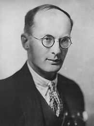
malûmat Bkz. bilgi.
mal ve para tutumluluğu Bkz. obsesif-kompulsif nevroz; ruhsal-cinsel gelişim kuramı (Dışkıl Dönem).
mana Bkz. anlam.
mandala Bkz. analitik psikoloji.
mani (mania) Çift kutuplu bozukluğun manik evresinde olduğu gibi abartılı heyecan, düşünsellik, aşırı bedensel etkinlik, abartılı bir mutluluk duygusu; aşırı iyimserlik, görkemlilik, önemlilik duyguları, savurganlık, yoğunlaşma yetisinden yoksunluk, dikkatsizlik, düşünce uçuşu, konuşma baskısı gibi belirtilerle tanımlanan duygusal bozukluk; taşkınlık. Bkz. manik; manik–depresif psikoz; manyak; sayı sapıklığı.
manidar Bkz. anlamlı.
manidarlık Bkz. anlamlılık.
manik (manic) Çift kutuplu bozukluğun mani evresini yaşayan kişi ya da bu evreyle ilişkili. Bkz. manik-depresif psikoz; manyak.
manik-depresif bozukluk Bkz. manik-depresif psikoz.
manik-depresif psikoz (manic depresssive psychosis) Aynı kişide birbirine karşıt iki ruh durumunun dönüşümlü olarak ortaya çıkması biçimindeki ağır bir duygusal bozukluk; taşkın-çöküntülü psikoz, çift kutuplu bozukluk. Bleuler’in siklofreni adını verdiği bu hastalık, daha çok kütbedenlerin hastalığı olarak biliniyor. Normal insanlarda da görülen iyimserlik, kötümserlik, bu psikozda en yüksek düzeye ulaşıyor. İlk bakışta birbirine karşıt gibi görünen taşkınlık ve çökkünlük, gerçekte aynı temele dayanıyor. Şizofreni gibi gençlikte başlayan bu hastalık, nöbetleşe geliyor. Ancak, hangi nöbetin ne zaman geleceği, süresi önceden kestirilemiyor. Yaşamları boyunca tek nöbet geçirenler; yılda 2-3 nöbete girenler; bir nöbetten öbürüne geçenler oluyor. Bir taşkınlık ya da çökkünlük nöbetini, normal bir aradan sonra ikinci, üçüncü… taşkınlık ya da çökkünlük nöbeti izleyebiliyor. Şizofreniden sonra en sık rastlanan ruh hastalığı, taşkın-çöküntülü psikozdur. Manik-Depresif Psikoz Çeşitleri: Bu psikoz, taşkın, çöküntülü, taşkın-çöküntülü ve paranoid biçim olarak 4 ayrı görünüşte ortaya çıkıyor. (1) Taşkın Psikoz: Aşırı bir sevinç, coşkunluk, çevik ve çekinmesiz davranışlar, çağrışım ve bellek artışı ile çok ve çabuk konuşma, konuşulanlar arasında bağlantısızlık, istençli dikkat azlığı, kendiliğinden dikkatin güçlenmesi, uyumsuzluk ve giyimde aşırılıklar, bu psikozun başlıca özelliklerini oluşturuyor. Normal insanlar, bilinçdışı yadsıma mekanizmasını kullanarak kaygılarının oluşturduğu mutsuzluklarını gizliyorlar. Taşkınlar ise geçmişte işlemiş oldukları ve baskıladıkları suç ve günahlarının belirtisi olan kaygılarını, abartılmış duygu, düşünce ve davranışlarla yatıştırma yolunu seçiyorlar. Hırsızlık, dolandırıcılık, hakaret, gözdağı verme, imzasız mektup yazma, adam yaralama ve öldürme, göstermecilik, yasadışı cinsel ilişki, yangın çıkarma, taşkın hastanın işleyebileceği suçlardandır. Bu nöbet basit, ilerlemiş, sabuklamalı ve karışık taşkınlık biçimlerinde görülebiliyor. (a) Basit Taşkınlık (hipomani): Bu, taşkınlığın en hafifidir. Basit taşkınlığa günlük yaşamda sıklıkla rastlanıyor. Bu tür taşkınlık gösterenler çok canlı, sevinçli, şakacı, konuşkan, cömert kimselerdir. Bunlar, olayları çabuk kavrıyor, çok çalışıyor, yorulmak bilmiyorlar. Kendilerine çok güveniyor, her işe atılıyorlar. Çevrelerinde kendilerini beğeniyle dinletmeyi beceren bu kişiler, herkese akıl veriyorlar. Önlerine çıkan herkesle senli benli oluyorlar. Genel yerlerde yüksek sesle konuşmaktan, açık saçık öyküler anlatmaktan çekinmiyorlar. Başkalarının düşüncelerine değer vermeyen, eleştiriye katlanamayan, birdenbire öflelenen bu kişilerin, bol para harcadıkları, eğlence yerlerinde herkesi ağırlamaya kalkıştıkları görülüyor. Gereksiz alışverişe; makale, bilimsel yapıt (!) yazmak gibi işlere yöneliyor; bunları yayımlamak için varlarını yoklarını harcıyorlar. Kadına, kumara düşkünlük gösteriyorlar. Her önüne gelenle cinsel ilişki kurmayı düşünüyorlar. Hafif taşkınların istençleri zayıflamış; ancak, bilinçleri tümüyle bozulmamıştır. (b) İlerlemiş Taşkınlık (akut mani): Bu taşkınlık biçimi, kısa süreli ve şiddetli yaşanıyor. Kıskançlık, kuruntu, büyüklük, zenginlik ve gizem sabuklamaları, ilerlemiş taşkınlığın egemen belirtileridir. Taşkınlık özelliklerinin tümünü yansıtan hasta, tam uykusuzluk çekiyor. Yerinde duramıyor; oturup kalkıyor, şarkı söylüyor, sormadan söze karışıyor, çevresindekiler üzerinde egemenlik kurmak istiyor, bunu kabul etmek istemeyenlere de kızıyor. Salyalar saçarak, sesi kısılıncaya dek, yüksek sesle ve ölçüsüz konuşuyor. Bellek ve çağrışım gücü arttığı için, konuşurken konudan konuya geçiyor. Ya kızgınlık, saldırganlık ya da aşırı sevinç ve canlılık gösteriyor. Gülmeden ağlamaya; tatlı davranıştan suçlama ve sövmelere birden geçişler yapıyor. Bağıra çağıra, çırılçıplak, sokaklarda dolaşmaktan cinsel organını göstermekten çekinmiyor. Bu çalkantılı taşkınlık sırasında tek çıkar yol, hastayı yatağına bağlamaktır. Bunlar, hastanelik hastalardır. (c) Sabuklamalı Taşkınlık (delirli mani): İlerlemiş taşkınlık nöbetinde görülen çalkantılar, bunda daha da artıyor. Onlara ısırma, saldırma ve vurup kırma da ekleniyor. Sabuklamalar çoğalıyor. Hasta, hiçbir ahlaksal yasaktan etkilenmiyor. Günlerce uykusuzlukla birlikte süren çalkantı, hastanın aşırı zayıflamasına, yara bere içinde kalmasına yol açıyor. Hastayı bağlama, hastaneye kaldırma zorunluluğu bu aşamada daha çok duyuluyor. (ç) Karışık Taşkınlık (konfüzyonlu mani): Bu, çok az rastlanan taşkınlık biçimidir. Taşkınlık, karışıklık, perişanlık, sanrı ve sabuklamalar, hafif ateş yükselmesi, zayıflama, bu nöbet biçiminin başlıca özelliklerini oluşturuyor. (2) Çöküntülü Psikoz (melankoli-depresif psikoz): Başta acı, üzüntü, kendini suçlama olmak üzere, harekette, düşüncede, konuşmada, çağrışımda azalma, çöküntülü psikozun ayırt edici nitelikleridir. Hastanın ağzı kuruyor ve paslanıyor. Libido ya çok azalıyor ya da tümüyle yitiyor. İştahsızlığı, kendisini yemek yemeye ve yaşamaya layık görmemesi nedeniyle besini geri çeviriyor. Çok kez, başında bir ağırlık ve karıncalanma, göğsünde sıkışma, karın bölgesinde belirsiz ağrılar duyuyor. Bu rahatsızlıkların mide ülseri, barsak tümörü ve benzeri ile ilgisi yoktur. Hasta, çökkünlük, kaygı ve uykusuzluk yaşıyor. Kendisini suçlu, günahkâr, onursuz ve değersiz görüyor. Sıklıkla gözyaşı döküyor. Her türlü günlük uğraşı, onun için altından kalkınmaz bir yük olarak görünüyor. Hiçbir zaman iyileşemeyeceğine inanıyor. Kendini suçlama, kimi zaman hastalık tablosuna öylesine egemen oluyor ki hasta, kendisiyle ilgisi bulunmayan suçların işleyicisi olduğunu savunmaya kalkıyor ve adalet kurumlarına teslim oluyor. Bu tür düşsel bir suç için kimi zaman da hem kendisini hem de bir başkasını ele veriyor. Özellikle sabaha karşı sıkıntı arttığından, kendini öldürme olayları, çoğunlukla bu saatlere rastlıyor. Hasta, sıkıntılarından kurtulmak için son çıkar yol olarak başvurduğu canına kıyma girişimlerini, başarıya ulaşıncaya dek yineliyor. Hastaların kimileri, kendi suç ve günahları nedeniyle onurlarının incindiğini, eziyet göreceklerini kuruntuluyor ve bu nedenle önce sevdiği yakınlarını, anne babasını, çocuklarını, sonra da kendilerini öldürüyorlar. Çökkün hastalarda sıklıkla görülen bir belirti de tüm kötülük, suç ve günahların kökeni olarak kabul ettikleri bir organlarını ve özellikle de cinsel organlarını kesmeleridir. Çöküntü psikozunun nedeni olarak, bastırılmış olan suçluluk ve günahkârlık duyguları gösteriliyor. Hastanın, işkence göreceği biçimindeki sabuklamaları; baskılanmış suçluluk, günahkârlık duygularının bilince yansımaları; yani içeatım mekanizmasının abartılı olarak kullanılmasının bir sonucu olarak yorumlanıyor. Çöküntülü psikozun sıklıkla görülen biçimleri basit, donuk, kaygılı ve sabuklamalı çöküntülerdir. (a) Basit Çökkünlük: Sıklıkla rastlananı ve en hafif olanı budur. Bu hasta, yaşamaktan hoşlanmıyor; yemeden içmeden kesiliyor. Kendinde güç bulamıyor, çalışamıyor. Kendini değersiz görüyor. Uykusuzluk çekiyor. Bir kenarda günlerce oturup sessiz gözyaşı döküyor. Bedensel rahatsızlıklardan yakınıyor. Sorulanlara cansız ve isteksiz bir anlatımla, renksiz ve bir iki sözcüklük kısa karşılıklar veriyor. Canına kıymayı düşünüyor (b) Donuk (stuporlu) Çökkünlük: Bu çöküntü biçiminde isteksizlik daha da artıyor. Hasta, saatlerce, günlerce durgun, hareketsiz, suskun, bir başına oturuyor. Yüzünde derin bir üzüntü anlatımı yer alıyor. Ancak çok zorlandığı, hekimce sarsıldığı zaman bir iki sözcük söylüyor. Bu durgun hasta, birdenbire yerinden fırlayarak kendisini pencereden atmaya; kafasını duvara vurmaya ya da karşısındaki kişiye saldırmaya yönelebiliyor. Beslenmeyi reddettiği için günlerce sonda ile besleniyor. Hasta, sanrılar görüyor ve sabukluyor. Donuk bunamaya çok benzeyen ve çökkünlüğü ondan ayıran, hastanın yüzünün üzüntülü anlatımı, zorlanınca bir iki sözcüklük karşılığın ancak alınabilmesi ve bu sözcüklerin hastanın suçluluk, günahkârlık, ruhsal değersizlik gibi üzüntülerini anlatmasıdır. (c) Kaygılı (anksiyeteli) Çökkünlük: Bu çökkünlük biçiminde olağanüstü bir sıkıntı ön plana çıkıyor. Hasta durmadan ağlıyor, inliyor, ellerini oğuşturuyor, saçını yoluyor, kafasını öteye beriye vuruyor. Hastayı uyku tutmuyor. Hastanın alnı, derin üzüntüsünü ve umutsuzluğunu yansıtan kırışıklılklarla doluyor. Kendilerini öldürenlerin çoğu, kaygılı çökkün hastalar arasından çıkıyor. Hasta, kendini öldürmek için her yola başvuruyor. (ç) Sabuklamalı Çökkünlük (delirli çöküntü): Bunda, çökkünlüğün sıkıntısı ile taşkınlığın çalkantısı bir arada görülüyor. Hasta, olağanüstü şiddette üzüntü duyuyor. Bu yüzden, bir yerde duramıyor; boyuna yer değiştiriyor; kendini öteye beriye atıyor, inleyip duruyor. Herkese ıstırabını ve küçüklük sabuklamalarını anlatıyor. Bu çöküntü biçiminde de kendini öldürmelere sıkça rastlanıyor. Hasta, günahlarının cezasını yalnız kendisinin değil; yakınlarının, giderek tüm insanların çekeceğini ileri sürüyor; kendisinin ölmeyip dünya durdukça ilençleneceğini, bu ıstırabı sürekli olarak yaşayacağını söylüyor. Kimi de kendisinin o anda var olmadığını, çevresindekilerinin gördüğü bedeninin çürümüş ya da bir odun, bir çöp, bir ölü olduğunu ileri sürüyor. Çevresiyle duygusal ilişkisini tümüyle keserek kendi iç ıstırabına gömülüyor. (3) Taşkın-Çöküntülü Psikoz (mixed): Siklofreninin çok az rastlanan bu üçüncü biçiminde taşkınlık ve çökkünlük bir arada yer alıyor. Bunda hasta, kimi günlerde ya da günün kimi saatlerinde taşkınlık; kimi günlerde ya da günün kimi saatlerinde ise çökkünlük yaşıyor. Böylece aynı nöbet içinde her iki tablo da yer almış oluyor. (4) Paranoid Biçim: Gerçekte paranoid biçim, taşkın-çökkün olan hastanın taşkınlık-çökkünlük nöbetleri arasında, belirleyici paranoya biçimlerini andıran nöbetlerin yer aldığı çöküntü durumlarına verilen addır. Hasta bu dönemde, kendisine işkence edileceğini ileri sürüyor. Bunu erken şizofreni ve paranoya kuruntularından ayıran, bunda her zaman bir kendini suçlamanın yer almasıdır. Manik Depresif Psikozun Tedavisi: Tedavinin kesinlikle hastanede yapılması gerekiyor. 8-10 kürlük elektroşok uygulaması, hastanın açılmasını sağlıyor. Ayrıca yatıştırıcı ilaçlar kullanılıyor. Direnç gösteren taşkınlık olaylarında, birkaç kez uygulanan ensülin koma tedavisinden de yararlanılıyor. Çöküntülü psikozlular için önemli olan bir nokta da hastanın uykusunu düzenlemektir. Kendini öldürenler en çok, kaygının arttığı sabah saat 3-6 arasında görüldüğünden, bu saatlerin uykuda geçmesini sağlamak gerekiyor. Bkz. depresyon; duygusal psikoz; mani.
manik-depresif bozukluk Bkz. manik-depresif psikoz.
manik-depresif psikozun tedavisi Bkz. manik-depresif psikoz.
manik olay Bkz. manik-depresif psikoz.
manipülasyon (manipulation) Deneysel çalışmalarda bağımsız değişkene, denetimli olarak farklı nicel ya da nitel değerler verme; değişilme, değişilmeme (çekip çevirme, kurcalana), güdümleme, yönlendirme. Yeterli denetim teknikleri kullanılarak, bağımsız değişkenin manipüle edilişi, bağımlı değişken üzerinde açıkça değişime yol açıyor ve bağımlı değişkendeki değişime, bağımsız değişkenin manipüle edilmesinin yol açtığı ortaya çıkarılarak, neden-sonuç ilişkisinin kurulması sağlanmış oluyor. Bir ilacın, örneğin LSD miktarının sanrı görmeye etkisi inceleniyorsa, ilacı 0 mgr, 10 mgr, 20 mgr gibi belirli dozda verme, bağımsız değişkene LSD miktarını manipüle etme (nicel değerler verme) olayıdır. LSD’nin veriliş biçiminin (nitel değerlerin) sanrıya etkisi incelenmek istendiğinde ise, manipüle olayı, LSD’nin veriliş biçiminin, örneğin, kas içinden, damardan verilişinin denetimli olarak ayarlanmasıdır (nitel değerler vermedir). Bkz. psikomotor beceriler.
manipüle etme (manipulation) Güdümleme, yönlendirme, çekip çevirme. Bkz. denetim.
mantığa büründürme Bkz. neden bulma.
mantık (logic) Önermelerin tutarlılığı ile çıkarımların geçerliliğini belirleyen kuralları konu edinen bilim. Bu kurallar, mantıksal değişmezlerin içeriğine (olağan yorumuna); mantıksal olmayan değişmezlerin ise yalnızca biçimine (dizimsel türlerine) dayanıyor.
mantık öncesi düşünme (prelogical thinking) 1. Mantık yasalarına uymayan düşünme biçimi. 2. Psikanalize göre, düşüncelerin, gerçeklik ilkesinden çok, haz ilkesinin denetiminde olduğu ilk çocukluk dönemine özgü düşünme biçimi; birincil süreç. Örneğin, istek gidermenin ağır bastığı düş kurma, mantıköncesi düşünme biçimidir. Bkz. ruhsal-cinsel gelişim kuramı.
mantık ötesi düşünce Bkz. sapık düşünce.
mantıksal açıklama Bkz. açıklama.
manyak Bkz. manik.
marazi ruhiyat Bkz. normaldışı davranışlar psikolojisi.
marijuana (marihuane, marijuana, haschisch) Değişik ülkelerde ayrı adlarla anılan ve Hint kenevirinden çıkarılan bir tortu. Bu maddenin etkisi, esrar ve LSD 25’inkine benziyor. Hint kenevirinin yaprak, sap ve çiçeklerinden yapılan karışım, daha çok sigara biçiminde kullanılıyor. Bu ilaç, alan kişiye bir rahatlık veriyor; kişinin kendini denetleme ve dizginleme duygusunu gevşetiyor. Önce, zaman ve yer algısının yok olmasına; ardından da uyku ve düşe dönüşen bir heyecan denetimine girilmesine yol açıyor. Işık ve renk görüntüleri oluşturuyor. Sanrılar, özellikle cinsel düşler, hoş zaman geçirten bir gerginlik ve sarhoşluk durumu yaratıyor. Uzunca süre kullanıldığında taşkınlıklara yol açıyor. Tutku durumuna getirilince de kişiyi çöküntüye sokuyor.
Mariotte noktası Bkz. kör nokta.
MARKS, Karl (1818-1883) Adıyla anılan okulun öğretisiyle uluslar arası sosyalist hareketi etkileyen ve bu hareketin başlıca önderlerinden biri olan Alman iktisatçı, düşür ve siyaset adamı. Marks, Rhine Eyaleti’nin Trier kasabasında doğdu; Londra’da öldü. Trier’deki Friedrich-Wilhelm Gymnasium’a 1830’a girdi ve orayı 1835’te bitirdi. Aydın ve liberal düşünceli ortamın olanaklarıyla çok genç yaştan başlayarak felsefe ve toplumsal konulara karşı yoğun bir ilgi geliştirdi. Önce Bonn; sonra Berlin Üniversitesi’nde hukuk, felsefe ve tarih okudu. 1841’de Jena Üniversitesi’nde sunduğu Demokritos ve Epikuros’un Doğa Felsefeleri Arasındaki Fark konulu teziyle doktora derecesini aldı. O, üniversite yıllarındayken ileri düşünceli aydınların bir bölümü Genç Hegelciler olarak anılan grupta toplanmıştı. Prusya yönetimi, onların üniversitedeki etkinliğine son vermek istiyordu. Hegelci düşünürlerin üniversiteden atılması, Marx’ı, çok istediği akademik mesleğe girme isteğinden caydırdı. 1842’de bir gazetede yazı yazmaya başladı. ve birkaç ay içinde gazetenin önde gelen yazarlarından biri oldu. Radikal demokrat tutumu nedeniyle gazete 1843 ortalarında kapatıldı. Aynı yıl evlenerek Paris’e yerleşti. Burada sosyalist önderlerle tanıştı. Engels’le yeniden buluşması, yaşam boyu sürecek derin dostluğun ve düşün arkadaşlığının başlangıcı oldu. Yazdıkları ve çalışmaları nedeniyle Fransa’dan sürülünce 1845’te Brüksel’e yerleşti. Engels’le birlikte Kutsal Aile ya da Eleştirel Eleştirinin Eleştirisi Bruno Bauer ve Hempalarına karşı’yı ve Alman İdeolojisi’ni yazdılar. Marx, aynı dönemde Felsefenin Sefaleti’ni yazdı. 1846’da Avrupa sosyalistleri arasında ilişki kurmak amacıyla Brüksel Haberleşme Komitesi’ni kurdu. 1947’de Komünist Birlik’in kuruluşuna katıldı. Birliğin ikinci kongresindeki istek üzerine Marx ve Engels, Komünist Manifesto’yu yazdılar. 1948’de Belçika’dan sürülen Marx, Paris’e geçti ve orada Komünist Birlik’in merkez komitesi başkanlığına seçildi. Aynı yıl Engels’le birlikte Almanya’ya gitti. Prusya hükümetince de sürülmesi üzerine önce Paris’; oradan sürekli oturacağı Londra’ya geçti. Burada Engels’in ve ailesinin desteği ile zorlukla yaşayan Marx, 1848 devrimlerinin ve devrim sonrasının deneyimlerini Fransa’da Sınıf Mücadelesi ve Louis Bonaparte’ın Darbesi adlı kitaplarında çözümledi. On yıl boyunca New York Daily Tribune gazetesinin Avrupa muhabirliğini yaptı. 1852’de dağılan Komünist Birlik ve öbür kimi sosyalistlerle ilişki içinde oldu. 1850’li ve 1860’lı yıllarda politik iktisat çalışmalarına ağırlık verdi ve Grundrisse’i yazdı. 1859’da Ekonomi Politiğin Eleştirisine Katkı’yı; 1867’de Kapital’in birinci cildini yayımladı. 1864’te Birinci Enternasyonal’in kuruluşunda ve Alman sosyalizminin partileşme aşamalarında Engels’le birlikte yer aldı. 1871 Paris Komünü’nü Fransa’da İç Savaş adlı kitabında çözümledi. Kapital’in 2. ve 3. ciltlerini de bu yıllarda yazdıysa da bunları, ölümünden sonra Engels yayımladı. Marx’a göre “düşünce, gerçekteki hareketin yansımasıdır.” “İnsan düşüncesinden, algılamasından bağımsız olarak var olan maddi dünya ve doğa, öncüldür ve düşünceyi belirler.” Marx’ın diyalektiği, “hareket ve gelişim içindeki madde ve düşüncelerin kavranmasında kılavuzlık etme”yi amaçlıyor. Marx diyalektiğini belirleyen önermelerden birkaçını şunlar oluşturuyor: Hareket ve gelişim, “çöküntülerin, devrimlerin, niceliklerin niteliklere dönüşümü ile doğrusal değil; helezoni biçiminde”, “çelişkilerin yol açtığı dinamiklerle” “belli bir olguyu oluşturan ve etkileyen farklı güçlerin ve bütün öğelerin karşılıklı bağlantıları içinde” oluşuyor. Marx’ın geliştirdiği Maddeci Diyalektik’le toplumsal çözümlemeler yapılmasına Tarihsel Maddecilik deniyor. Buna göre toplumsal bilinci, toplumsal varlık belirliyor. Tarihsel maddeciliğin temel çözümleme kavramları; insanın doğayla ilişkisinin ve doğayı geliştirmesinin temel araçlarının (teknoloji ve insan bilgisinin) oluşturduğu üretim güçleri; toplumdaki mülkiyet ilişkilerinin belirlediği artı değere el koymanın farklı biçimlerini açıklayan üretim ilişkileri; bu iki kavramın birlikte anlatımı olan üretim biçimi ve siyasal kurumlarla hukuk kurumlarının ve toplumsal bilinç ideolojisinin oluşturduğu üstyapı’dır. Buna göre, her üretim biçimine özgü toplumsal sınıflar, temel öğeler olarak ele alınıyor ve tarih, sınıf mücadelelerinin tarihi olarak değerlendiriliyor. Marx’a göre sosyalizm, “kapitalizmin doğal gelişimi içinde, emek süreçlerinin giderek artan sosyalizasyonu ile üretim araçları üzerindeki özel mülkiyetin çelişkisinin çözümü aşamasında tarihsel bir zorunluluk olarak ortaya çıkacaktır.” Marx, yaşadığı dönemde kuramcı ve örgütçü olarak büyük saygı toplamış; öğretisi, 20. yüzyılda da etkisini sürdürmüştür. Başlıca yapıtları: Manifest der kommunistischen Partei (Engels ile), 1848 (Komünist Manifestı.1976); Zur Kritik der politischen Ökonomie, 1859) (Ekonomi Politiğin Eleştirisine Katkı); Das Kapital, 1. Cilt, 1867, 2. Cilt 1885, (ö.s.), 3. Cilt (ö.s.), 1894 (Kapital 3 cilt, 1975-1978); Theorien über denMehrwert, 3 cilt (ö.s.), 1905-1910 Artı Değer Teorileri); Marx-Engels Selected Works, 3 cilt, 1969-1970 (Seçme Yapıtlar, 3 cilt, 1976, 1977, 1979).
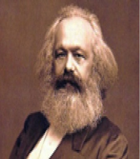
Marksçılık Bkz. Marksizm.
Marxçı psikoloji Wilhelm (Marxian psychology) Davranışı diyalektik açıdan ve maddeci ideolojiye dayalı olarak yorumlayan psikoloji dalı; diyalektik psikoloji. Bu yorum, insan doğasının baş öğesini ekonomik etken olarak benimsiyor.
Marxçı ruhbilim Bkz. Marxçı psikoloji.
Marksizm (Marxism) 1. Karl Marx (1818-1883) ve Frederich Engels (1820-1895) ile onları izleyenlerin değişik yönlerde geliştirdiği diyalektik materyalizm (eytişimsel özdekçilik) felsefesi. 2. Toplumsal değişmeyi, bilgilendirme, inandırma ve halkoyu ile gerçekleştirmeyi savunan demokratik toplumculuktan (demokratik sosyalizmden) ayrı olarak güç zoru ile ihtilali öneren ve daha köktenci bir sola kayan Marksçı sosyalizm ya da komünizm; Marksçılık.
masal (tale) Belli değer ve inançları dolaylı yollardan çocuklara aşılamak, onları eğlendirmek ya da onlara zihin esnekliği kazandırmak amacıyla onlara anlatılmak üzere uydurulan, olağanüstü konuları dile getiren ilginç öyküler; efsane. 2. Bir toplumun ya da alt kültür grunun geçmişiyle ilgili ya da yararlıklar göstermiş kahramanlarına ilişkin kuşaktan kuşağa büyük bir övgü ile anlatarak aktardığı olağandışı ve doğaüstü nitelikteki öyküler ve inançlar. Bkz.
masallama tutkusu Bkz. masal uydurma; mit.
masal uydurma (confabulation, fabulation, fabrication) Gerçekle ilişkisiz, düş ürünü düzmece öyküler uydurma; masallama tutkusu. Bu, temelde bellekteki boşlukları doldurma, oralara ayrıntılar ekleme biçiminde oluyor. Bilinçli olarak bellek eksikliklerini tamamlamayı amaçlayan masal uydurma, bilinçsiz olarak bir savunma mekanizması gibi bozma ve yanılma için kullanılıyor. Çocuklarda görülmesi olağandır; ancak, ruh hastaları da masal uydurabiliyor. Her ikisi de söylediklerinin doğruluğuna inanıyor. Bunun bir tutkuya dönüşmesine masallama tutkusu deniyor.
maskeleme (masking) 1. Algı süreçlerinde bir uyarıcının (maskeleyicinin), başka bir uyarıcıya ait algılanma eşiğini yükseltmesi ya da onun algılanmasını engellemesi. Örneğin, gürültü, konuşmayı anlaşılmaz kılıyor; bir koku, başka bir kokuyu bastırıyor. Ses gibi dalga hareketinde frekans bileşenlerinin yakınlığına ve masekeleyici uyarının yoğunluğuna bağlı olarak maskeleme derecesi artıyor. Kokuda ise belirleyici olan, kokunun keskinliğidir. 2. Psikanalize göre, gerçek ruhsal sarsıntı yaratan anının, bir ölçüde doğru; ancak, daha az ürkütücü olan başka bir anının arkasına gizlenmesi. Bkz. perde anı. 3. Kişinin duygularını gizlemesi.
maskelenmiş anne tutumları. Bkz. anne baba tutumları (Kusurlu Anne Baba Tutumları).
maskeli yoksunluk Bkz. duygusal ayrılma.
MASLOW, Abraham (1908-1970) Amerikalı psikolog; hümanist psikolojinin kurucularından; “güdü (gereksinim) kuramı”nı geliştiren ve “kendini gerçekleştirme” kavramıyla tanınan psikolog. Maslow, Rusya’dan Amerika’ya göç eden eğitimsiz Yahudi bir ailenin yedi çocuğundan ilki olarak New York Eyaleti’nde Brooklyn’de dünyaya geldi. Californiya‘da Menlo Park’ta öldü. Yüksek öğrenimini Wisconsin Üniversitesi Psikoloji Bölümü’nde yaptı. Aynı üniversitede, 1934’te, maymunların toplumsal ve cinsel davranışlarında hükmetmenin rolü konusunda doktorasını tamamladı. 1935’te Columbia Üniversitesi’ne geçti. Bir süre sonra Brooklyn College’e öğretim üyesi olarak girdi ve orada 15 yıla yakın bir süre görev yaptı. 1951-1969 yılları arasında Brandeis Üniversitesi Psikoloji Bölümü başkanı olarak çalıştı. 1967-1968 arasında Amerikan Psikoloji Derneği’nin başkanlığını yaptı. Geleneksel psikolojinin güdüleri olan açlık, susuzluk, cinsellik gibi bireyin korunmasını ve türün çoğalmasını sağlayan temel güdüler ve ikincil güdüler (türeme güdüleri) olarak ikiye ayıran güdü anlayışını yetersiz buldu. Geliştirdiği kuramla güdüleri (gereksinimleri) bir aşama sırasına koydu. 1943’te bütüncü-dinamik güdü kuramını ortaya attı ve bunu, 1950’lerde geliştirdi. Maslow’a göre sevgi ve benzeri yüksek güdülerin, türün tüm bireylerinde görülmemesinin nedeni, temel ya da birincil olmamaları değil; öbür güdülere göre daha az güçlü olmalarıdır. Fizyolojik kökenli gereksinimler bile kimi zaman birbiri üzerinde üstünlük sağlıyor. Örneğin, aç birisinin, birdenbire soluyacak havadan yoksun kalması, açlık gereksinimini bastırıp öne geçiyor. Gücü azalan açlık gereksinimi, hava gereksinimi giderilinceye dek yok oluyor. Aynı süreç, insana özgü öbür gereksinimler için de söz konusudur. Açlık, susuzluk, cinsellik gibi bedensel (fizyolojik) gereksinimlerin karşılanmasından sonra, sırasıyla güvenlik güdüsü; sonra sevgi ve ait olma güdüsü; daha sonra da özbeğeni (saygınlık) geliyor. Davranışları, gereksinimler (dürtüler, güdüler) yönetiyor; kavrama ve algıyı çarpıtıyor. Eksikliğin yarattığı bütün gereksinimler doyurulduğunda davranış artık güdülmüyor; algı ve kavrama çarpıtılmıyor; kişi, sahip olduğu en yüksek gizilgücü eyleme geçiriyor. Bu da kendini gerçekleştirmedir (özgerçekleştirimdir). Maslow, kendini gerçekleştirmeye Einstein, Lincoln, Walt Whitman, A. Schweitzer gibi kişileri örnek göstermiştir. Bu kişilerde, ortalama bireyden farklı olarak, gerçekliği etkili bir biçimde algılama ve gerçeklikle daha rahat ilişki kurma; kendini, doğayı ve başkalarını olduğu gibi kabul etme; yalın ve doğal olma; tüm insanlıkla özdeşleşme; düşmanca olmayan, felsefi bir mizah anlayışına, özgünlüğe ve yaratıcılığa sahip olma gibi özelliklerin bulunduğunu belirtmiştir. Ancak, Maslow’a göre, bu kişiler de tam yetkin değildirler; tüm kaygı ve çatışmalardan onlar da kurtulmamışlardır. Böyle de olsa, onların gereksinimleri, sıradan bir bireyin gereksinimi gibi maskelenmemiştir; onlar, doyurulmamış gereksinimlerinin baskısı altında değildirler. Maslow, organizmacı, insan doğasının gizilgüçlerinin araştırılmasını konu alan yaklaşımını 1960’larda hümanist psikoloji olarak adlandırdı. 1961’de Jurnal of Humanistic Psychology’nin yayımını başlattı. Ertesi yıl da Amerikan Hümanist Psikoloji Derneği’ni kurdu. Başlıca yapıtları: Motivation and Personality (1954) (Güdü ve Kişilik), The Psichology of Science: A Reconnaissance (1965) (Bilim Ruhbilimi: Bir İrdeleme), Toward a Psichology of Being (1968) (Bir Varlık Psikolojisine Doğru). Bkz. dengeleşim; eksiklik gereksinimleri; eksiklik güdülenmesi; gereksinim; gereksinimler aşama sırası; içgüdüsel gereksinimler; kendini gerçekleştirme; Maslow’un insan güdülenmesi kuramı; metagüdülenme; özgüncelleme; temel gereksinimler; üst gereksinimler; varlık sevgisi.
Maslow’un insan güdülenmesi kuramı (Maslow’s theory of human motivation) Bkz. kendini gerçekleştirme.
Masters ve Johnson’un dört evreli cinsel tepki modeli Bkz. cinsellik; cinsel tepki döngüsü.
mastürbasyon (masturbation) 3-5 yaşlarından başlayarak daha çok, temizlenme ve yıkanma sırasında çocuğun uyarıya duyarlı olan cinsel organına dokunması sonucunda bu organın haz kaynağı olduğunu keşfederek bu organıyla oynaması; özdoyurum. Çocuğun ara sıra özdoyuruma başvurması doğaldır; bu eylem, normal ruhsal-cinsel gelişimin bir parçasıdır. Bu eylem karşısında büyükler telaşa kapılmamalı; bu eylemi yasaklamaya, denetim altında tutmaya kalkmamalı; çocuğu korkutmamalıdırlar. Bu tür yanlış davranışlar, çocukta cinsellikle ilgili yasak kavramı ve suçluluk duygusu oluşturuyor. Ancak, mastürbasyonun süreklilik kazanması önemsenmeli; bunun sevgi eksikliği, can sıkıntısı yüzünden başvurulan bir eylem olup olmadığı araştırılmalıdır. Bu konuda yapılacak doğru davranış, belli etmeden, çocuğu başka uğraşılara yöneltmek, onun hoşlanacağı yeni uğraşı alanları bulmasına yardımcı olmaktır. Bu ilgi, 12-13 yaşlarında doğal olarak yeniden ortaya çıkıyor. Ergenin başvurduğu mastürbasyon ise, daha ayrı bir anlam taşıyor. Genç, cinsel düşlerini bu kez, olgun cinsel organlara sahip olarak deniyor. Uzmanlara göre mastürbasyon, henüz cinsel ilişkiye başlamamış olan “normal ve sağlıklı gencin ayrılmaz bir parçasıdır.” Mastürbasyonu reddedenler, korku ve suçluluk duygusu yaşayan kişilerdir. Ergenlikten sonra mastürbasyon, iki durumda normal sayılmıyor. Bunlardan biri, yetişkinin karşı cinsle ilişki olanağı olduğu halde, mastürbasyonu yeğlemesidir. İkincisi de kişinin cinsel gerilimi gidermek için değil de tek doyum kaynağı olarak mastürbasyona başvurmasıdır. Kişi, sıkılganlık ya da karşı cinse yaklaşma korkusuyla mastürbasyonu yeğliyorsa, bu kişi, karşı cinsle birlikteliğin çok daha yoğun bir haz vereceğini öğrenmekten kendini yoksun bırakmanın yanı sıra, bir de sıkılganlığın üstesinden gelmekten kaçıyor demektir. Bkz. çocuk ve ergende görülen uyumsuzluklar; ruhsal-cinsel gelişim; ruhsal-cinsel gelişim kuramı (Üretken Dönem).
masum yalan Bkz. yalan.
matematiksel mantık (mathematical logic) Matematikle yakın ilişki içinde olduğu; matematiğin temellerini araştırdığı; işlemleriyle simgeleri matematiğinkilere benzediği için çağdaş mantığa verilen ad.
matematiksel psikoloji (mathematical “model” psychology) Matematiksel ve istatistiksel modeller yardımı ile psikoloji verilerini sistemleştirme çabası; örneklemdeğersel psikoloji. Bu tür modellerden ruhsal verilerin düzenlenmesi için kavramlar elde etme.
materyalizm Bkz. maddecilik.
mazohist Bkz. özezer kişi.
mazohizm Bkz. özezerlik.
mazoşist Bkz. özezer kişi.
mazoşizm Bkz. özezerlik.
MEAD, Margaret (1901-1978) Güney Pasifik’te farklı kültürler üstüne araştırmalar yapan, herkesin anlayabildiği bir dille yazarak antropolojinin yaygınlaşmasına katkıda bulunan ABD’li sosyal antropolog. Mead, iktisat profesörü bir baba ile toplumbilimci, ilk feministlerden olan bir öğretmen annenin çocuğu olarak Philadelphia’da dünyaya geldi; New York’ta öldü. İlk ve orta öğrenimini evde, öğretmen olan büyükannesinin gözetiminde tamamladı. 1919’da De Pauw College’de başladığı yüksek öğrenimini New York’taki Barnard College’da sürdürdü. Burada, çağdaş sosyal antropolojinin kurucularından Franz Boas’ın ve Ruth Benedict’in öğrencisi oldu. 1923’te psikoloji; 1924’te de lisansüstü eğitimini tamamladı. Doktorasını ise 1929’da Columbia Üniversitesi’nde antropoloji alanında yaptı. 1925’te Güney Pasifik’te Samoa Adaları’nda alan araştırmalarına başladı. 50 yıl boyunca çeşitli aralıklarla bu araştırmalarını sürdürdü. 1926’dan emekli olduğu 1969’a dek New York’taki Amerikan Doğa Tarihi Müzesi Etnoloji Bölümü’nde asistan, müdür yardımcısı ve müdür olarak çalıştı. 1976’da Mead adına bir kürsü, bir de antropoloji çalışmalarının geliştirilmesi amacıyla Mead Vakfı kuruldu. Mead, 1925-1939 yılları arasında Samoa’da, Admiralty Adaları’nda Manus’ta, Omaha’da, Yenigine’de Arapesh, Mundurgumor ve Tchambuli kabilelerinde ve Bali’de yaptığı araştırmalarda çocukluk, ergenlik, gençlik evreleri ve cinselliğe ilişkin kunular ile doğum, emzirme, çocuk yetiştirme açılarından toplumlardaki kadın-erkek rolleri ve bunların değişkenliği üzerinde çalıştı. Biyolojik gereklilik savına karşı çıkarak cinsel kişiliği kültürün belirlediğini ileri sürdü. Mead’ın bulgularına göre, Arapesh kültüründe kadın ve erkekler, Batı kültüründeki kadınlara; Mundurgumor’daki erkek ve kadınlar, Batı’daki erkeklere benzer davranıyorlardı. Tchambuliler’de ise kültürel rol ve ilişkilerde, Batı’nın geleneksel kalıplarının tersine, etkin kadın ve edilgin erkek rolleri belirgindi. Mead’ın Samoa’da Ergenlik Çağı ve Üç İlkel Toıplumda Cinsiyet ve Davranış adlı yapıtları, ABD’de en çok satan kitaplar arasında yer aldı. Mead, Bali’de birlikte araştırma yaptığı eşi antropolog Gregory Bateson ile birlikte çeşitli alan araştırma yöntemleri de geliştirdi. Fotoğraf ve filmin belgeleme aracı olarak kullanımı, bu yöntemlerin başında geliyor. Onların 1942’de birlikte hazırladıkları Balili Karakteri: Fotoğrafik Bir Çözümleme adlı yapıt, fotoğrafın alan araştırmasında kullanımının en iyi örneklerinden biridir. Mead’ın Üç Kültürde Bebeklerin Yıkanması adlı filmi, etnografik belgesel klasikleri arasında sayılıyor. Başka birçok araştırma daha yapan Mead, kültürlerin, biyolojik gelişimi de etkilediğini ileri sürdü. Ayrıca, çocuk doğurmamış kadınların da emzirebildiğini gösterdi. Beslenme alışkanlıklarının standartlaşmış kültürel davranış kalıplarından biri olduğunu savundu. Mead, yakın çalışma arkadaşı da olan Ruth Benedict’in ölümünden sonra, onun Columbia Üniversitesi’nde başlattığı Çağdaş Kültürler Üzerine Araştırmalar Tasarımı’nın yöneticiliğini üstlendi. Uzmanlardan oluşan bir ekip, yazılı kaynaklara dayalı olarak Çek, Fransız, Polonyalı ve Rus kültürleri ile Amerikan ulusal kültürünü araştırdı. Kültürün biçimsel nitelikleri üzerinde duran Mead, bu kuramın, kültürün kökenlerini değil, yalnızca kültürleşme sürecini açıkladığını; çocuklara kültürü, kundaklama ya da sütten kesme gibi belirli eylemler değil, bu eylemleri de içeren kültürel bütünün ilettiğini ileri sürdü. Mead, araştırma yaptığı topluluklarla ilişkisini sürdürerek bir kuşak boyu değişimi inceleyen az sayıdaki antropologlardan biri oldu. Yapıtları, konferansları, köşe yazıları ile antropolojinin yaygınlaşmasında çok etkili oldu. 1970’te yayınlanan Kültür ve Bağlanma adlı yapıtta karşıt kültürler konusundaki deneyimlerinin aydınlatıcılığında Amerika’nın kimi toplumsal sorunlarına çözüm önerileri getirdi; gençlerle yaşlılar arasında artan gerilimi araştırdı. Çeşitli üniversitelerden 28 onursal üyelik ve ödül aldı. Ölümünden sonra 1979 yılında da Amerika’nın en büyük ödülü olan Cumhurbaşkanlığı Özgürlük Madalyası ile onurlandırıldı. Kimi eleştiriler yöneltildiyse de onun çağdaş antropolojiye katkıları, genel bir kabul gördü. Geriye, 44 kitap ve 1000’i aşkın makalenin yanı sıra, çok iyi düzenlenmiş büyük bir arşiv bıraktı. Başlıca yapıtları: Goming of Age in Samoa (1928) (Samoa’da Ergenlik Çağı), Growing up in New Guince (1930) (Yeni Gine’de Büyüme), Sex andTemperament in Thiree Primitive Societies (1935) (Üç İlkel Toplumda Cinsiyet ve Davranış), The Mountain Arapesh, 3 cilt (1938-1949) (Dağlı Arapeşler), And Keep Your Powder Dry: An AnthropologistLooks at America (1942) (Ve Barutunuzu Kuru Tutun: Bir Antropoloğun Amerika’ya Bakışı); Balinese Character A Photographic Analisis (G.Bateson ile) (1942) (Balili Karakteri: Fotoğrafik Bir Çözümleme), Male and Female: A. Study of the sexes in a Changing Worlt (1949) (Erkek ve Dişi: Değişen Dünyada Cinsiyet Üzerine Bir Çalışma), New Liver for Old, 1956 (Eski İçin Yeni Yaşam Biçimleri), Culture and Commitment (1970) (Kültür ve Bağlanma), A Way of seeing (R. Matreux ile) (1970) (Bir Görme Biçimi), Letters from the Field: 1925-1975 (1977) ( Araştırma Alanından Mektuplar: 1925-1975).
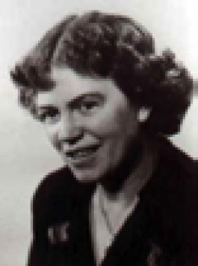
medeniyet Bkz. uygarlık.
meditasyon (meditation) 1. Derin düşünmeyi, derin ve düzenli soluklanmayla nötr imgeler üzerinde odaklanmayı içeren bir gevşeme tekniği; gerilim azatlımı. Bkz. gevşeme tedavisi. 2. Meditasyonla ulaşıldığı var sayılan ve iç dinginlik, erinç ile belirlenen farklı bir bilinç durumu. Budizm ve Hinduizm dinlerinde bu anlam geçerlidir. Bkz. transandantal meditasyon.
Medreseler, Sıbyan Okulları (mahalle mektepleri) ve Enderun Okulu’nda Eğitim Bkz. Türklerde eğitim.
medulla Bkz. beyin kökü; merkez sinir sistemi.
medya Bkz. kitle iletişim araçları.
medyan Bkz. ortanca.
megalomani Bkz. büyüklük sabuklaması; görkemlilik kuruntusu.
mekân algısı Bkz. yer algısı.
mekanik alıcı (mechanoreceptor) Baskı ya da gerilim gibi mekanik dokunmaya (uyarıma) duyarlı olan duyu alıcıları; alıcı. Bunlar, derideki uzmanlaşmış sinir uçları ya da serbest sinir uçları olabiliyor. Bu alıcılar 4 gruba ayrılıyor. Her grup, farklı mekanik uyarıcı frekans ve şiddetine tepki verebilecek bir düzene sahip bulunuyor. Vücuttaki dağılımları tekdüze olmayan bu mekanik alıcılar en yüksek yoğunlukla el parmak uçlarında toplanmıştır.
mekanik düşünme testi Bkz. farklı yetenek testleri.
mekanik yetenek 1. (mechanical ability) Mekaniğin temel ilkelerini anlayışla uygulama ve avadanlıklarla makineleri rahatlıkla kullanma gücü. 2. (mechanicalintelligence) Kişinin soyut ya da toplumsal sorunları değil de somut sorunları çözme yetenek ve becerisi. Bu yetenek, çok kez çeşitli soyut zekâ türleri ile bileşik durumdadır. Bkz. somut zekâ; mekanik zekâ; soyut (toplumsal) zekâ.
mekanik yetenek testi (mechanical aptitude test) Kişinin makinelerle mekanik araçları kavrama ve kullanmada başarı elde etmesini sağlayan, gizli yeteneğini ölçen test.
mekanik zekâ (mechanical intelligence) 1. Makinelerle, araç ve gereçlerle uğraşmada gerekli olan gizilgüç. 2. Makinelerin, araç ve gereçlerin kullanılmasında karşılaşılan sorunların çözümünü sağlayan zekâ. Bkz. zekâ.
mekanizma (mechanism) düzenek. 1. Makine ya da onun gibi çalışan bir sistem. Birlikte çalışan ve belli görevler yapan parçaları sistemli olarak bir araya getirme. 2. Makineye benzeyen bir sistemin işleme biçimi. Örneğin, akciğerde oksijen değiş tokuş mekanizması bulunuyor. 3. Bir amaca ulaşmak ya da bir görevi yapmak için kullanılan araçlar. 4. Bir amaca ulaşmak için alışkanlık, dikkat çekme, uyum mekanizması gibi az çok sürekliliği olan bir etkinlik gösterme. 5. Psikanalizde, duygunun da yer aldığı bir düşünsel düzenek.
mekânsal konum (position- in- space) Gözlemcinin, çevresiyle konumsal ilişkisi. Nesnelerin, birbirinin yanında, önünde, arkasında, altında, ya da üstünde olduğunu algılama; yersel konum. Mekânsal konum algılamasıyla ilgili sorunlar, öğrenmede güçlükler yaratabiliyor. Örneğin, bir sözcüğü oluşturan harflerin birbirlerine göre konumları doğru algılanmadığında, okuma yazma sorunu yaşanıyor. Bkz. tersine çevirme.
melankoli (melancholia) DSM-IV düzenlemesinde aşırı depresif şiddeti tanımlayan terim. Bütün etkinliklerden zevk almama, zevk veren dış uyaranlara yanıt vermeme, kendi sabahları daha kötü duyumsama; karasafra, karasevda, depresyon. Melankoli, belirgin bir durgunluk ya da kaygılı, sıkıntılı, gergin bir hareketlilik, önemli ölçüde kilo yitimi, aşırı ya da uygunsuz günah duygusu gibi özellikleriyle öbür depresif şiddetlerden farklı olan bir aşırı, şiddetli depresyondur. Freud’a göre, normal üzüntü, yas ile melankoli, normal korku ile kaygı gibidir. Aşk nesnesinin yitimi, yaşam enerjisinin gerçekten çekilmesine yol açıyor ve yaşan enerjisi, yitirilmiş aşk nesnesinin zihinsel imgesine içerikleştiriliyor. Bu durumu Abraham, yaşam enerjisinin ağızcıl döneme gerilemesi olarak kuramlaştırıyor.
melankolik özellikler (melancholic features) Daha çok ağır depresif olaylarda görülen ve belli bir haz yitimi, ruhdevimsel yavaşlık ya da ajitasyon, kilo yitimi, uykusuzluk gibi belirtilerle ortaya çıkan bozukluk. Bkz. depresy.
melatonin (melatonin) Beyin epifizinin üretip kan dolaşımına boşalttığı ve gonatotropik hormonlar da içinde olmak üzere birçok endokrin işlevini ketliyor gibi görünen bir hormon. Bu hormonun, üreme işlevinde ve günlük ritimlerin düzenlenmesinde etken olduğu biliniyor. Örneğin, çocukların cinsel açıdan zamanından önce olgunlaşmalarını bu hormon önlüyor. Jet gecikmesi ve kimi uyku bozukluklarında da etkili olduğu biliniyor. Yaşlanmayı yavaşlattığına ve bağışıklık sistemini güçlendirdiğine de inanılıyor. Bkz. serotonin.
meme (breast) Anatomik organ ya da kişinin kafasında buna ilişkin oluşturduğu düşünce (nesne temsili). Ağızcıl isteklerin, dürtülerin, düşlemlerin, kaygıların nesnesi olan meme, kısmi nesne” olarak “anne” ya da “gereksinim giderici nesne” olarak “anne” ile eşanlam taşıyor. Bu yaklaşımla kavram, yalnızca bir emme organı olan memeyi değil; bebeğin, bilincinde olmadığı annenin kişiliğini de içeriyor. Bebeğin memeyi ikiye ayırma süreci, memenin bölünmesi deyimi ile dile getiriliyor. Bunlardan biri kusursuz, sevgi dolu, gereksinim giderici (iyi meme) olarak duyumsanırken, öbürü nefret eden, reddeden (kötü meme) olarak değerlendiriliyor. Memenin bölünmesi, aynı nesneye yönelik sevgi ve nefret algısına karşı bir savunma olarak gerçekleştiriliyor; cezalandırıcı kaygı pahasına ikirciklikten kurtuluşu sağlıyor. Bkz. paranoid şizoid konum.
memeden kesme (ablactation, weaning) Çocuğu anne sütü emmekten ya da şişeden beslenmekten vazgeçmeye alıştırma; sütten kesme. Emzirme, anne ile bebek arasında yaşanan çok özel bir paylaşım sürecidir. Anne, bebekten gelen sinyalleri algılayarak bebeğinin acıktığını anlıyor (ya da anlamalıdır). Emzirme, anneye ve bebeğe karşılıklı haz veriyor. Bebeğin emmesi, annenin hormonlarını uyarıyor ve annenin süt üretimi artıyor. Emzirmeyen annelerin bir süre sonra sütleri kesiliyor. Gerek ruhsal gelişimi desteklemesi gerekse iyi bir besin olması nedeniyle bebeğin ilk altı ay, anne sütüyle beslenmesi gerekiyor. Daha sonra mamaya geçilmesi ve anne sütünün ara öğünlerde verilmesi öneriliyor. Memeden kesme, bebeğin ayrışıp bireyleşmesini sağlayan ilk adım özelliğini taşırken, annenin, bağımlılığı yitirme kaygısını yaşamasına yol açıyor. Bu nedenle memeden kesmeye annenin ruhsal açıdan kendisini hazır hissettiği bir zamanda karar vermesinin doğru olacağı düşünülüyor. İşe başlama dönemi, meme emzirmeyi sonlandırmak için uygun zaman olarak görülüyor. Memeden kesmeye, emzirme sayısını azaltıp süresini kısaltarak başlanabiliyor. Ancak, bu yöntemin kararlı ve tutarlı biçimde uygulanması gerekiyor. Önce öğlen emzirmeleri kaldırılıp onun yerine formül mama veriliyor. Kimi öğünlerde çocuğa, sağılmış anne sütü, biberonla veriliyor. Uykudan önceki emzirmelerin kesilmesi ise en sona bırakılıyor. Çocuğu memeden uzaklaştırmak için çocuğa bağırma, onu azarlama, korkutma; memenin dış görünüşünü çocuğun beğenmeyeceği biçime sokma; memeye acı, ekşi tatlar sürme gibi yöntemlere kesinlikle başvurulmaması gerekiyor. Çocuğun emme isteğini geçiştirmek, çocuğu, erteleyerek emzirmek, güven ilişkisini zedeleliyor. Onun için kararlı bir biçimde emzirme eyleminden vazgeçilmeli ve artık büyüdüğü, bu nedenle öbür beslenme biçimlerine geçildiği açıklanarak kendisine yeni besinler verilmelidir. Yemediğinde ısrar edilmemeli; acıktığında yiyebileceği söylenmelidir. Bkz. meme.
menapoz Bkz. aybaşı kesilimi (yaş dönümü).
MENDEL, Johann Gregor (1822-1884) Bitkiler üzerinde yaptığı incelemelerle kalıtımın temel yasalarını ortaya koyan ve kalıtımbilimin öncüsü olan Avusturyalı rahip; botanik ve kalıtım bilgini. Mendel, Silezya’daki Heinzendorf’ta (Hyncice’de) doğdu; Moravya’daki Brünn’de (Brno’da) öldü. Üç çocuklu ailenin tek erkek çocuğudur. Babası çiftçi; annesi ise, eskiden beri bahçıvanlıkla uğraşan bir ailenin kızıdır. Mendel, çok küçük yaşlarında babasından, sonra bir öğretmeninden bitki yetiştirmenin bütün özelliklerini öğrendi. 1833’te Leipnik’teki; bir yıl sonra da troppau’daki bir liseye gönderildi. Burada üstün bir başarı gösterdi. 1840’ta lise diplomasını aldı ve Olomouc Üniversitesi’nde felsefe derslerini izlemeye başladı. Ailesinin ekonomik sıkıntısı nedeniyle 1843’te fizik profesörünün önerisiyle Brünn’deki Augustinus tarikatının manastırına girdi ve Gregor adını aldı. Burada hem din eğitimi gördü hem de Felsefe Enstitüsü’nde tarım ağırlıklı dersleri izledi. 1847’de rahip oldu. 1849’da bir okula yedek öğretmen olarak atandı. Öğretmenliği sevdiğini anlayınca doğa bilimleri öğretmeni olmaya karar verdi. Ancak, girdiği üniversite sınavında jeoloji ve zoolojide başarı gösteremedi. O nedenle bu hakkını yitirdi. Manastır’ın da desteği ile gittiği Viyana Üniversitesi’nde doğa bilimleri ve botaniğin yanı sıra, sonraki araştırmalarında kendisine ilerde yararlı olacak istatistik yöntemleri de öğrendi. 1854’te Brünn Teknik Okulu’nda fizik ve doğa tarihi dersleri için yedek öğretmenlik görevi aldı. Başladığı bitki malzeme çalışmalarını tamamladığı 1861 yılında başrahip oldu. Mendel, küçük yaşlarında babasından ve bir öğretmeninden öğrenmiş olduğu bitki yetiştirme, bitkilerde aşılama ve çaprazlama konularında, bilimsel araştırmaya değer veren Viyana Üniversitesi’nin kütüphanesinden ve bahçesinden çok yararlandı. Bitki fizyolojisi profesörü Franz Unger’in derslerini ilgiyle izledi. Başta bezelye olmak üzere, birçok bitkinin melezlemesini ayrıntılı olarak öğrendi. Mendel, manastıra dönerek, sonradan bilim tarihinin en değerli deneysel çalışmaları arasına girecek olan incelemelerine, konusunda derin bir bilgiye sahip olarak başladı. On yılı aşkın bir süre, başta bezelye olmak üzere, çeşitli bitkiler üzerinde araştırmalar yaptı. Çalışmalarının sonuçları, meteoroloji alanında değerlendirildi ve kendisine büyük bir ün kazandırdı. Ancak, incelemelerinin botanik ve genetikte çığır açtığını; kendisini en büyük bilim adamları arasına kattığını göremedi. Mendel, 30.000’e yakın bitki üzerinde ayrıntılı çalışmalar yapmıştı. Bu çalışmalarında çıkış noktası, saf soy bezelye türleri elde etmekti. Bu amaçla 1854-1856 yılları arasında bir dizi denemeler yaptı. Yapay yollardan kendi içinde üretildiğinde her zaman aynı özellikleri gösteren bezelye türlerini ayrıştırmayı başardı. Örneğin, kendi içinde her kuşağı yeşil ya da sarı taneli bezelye veren bitkiler elde etti. Bu saf soyları birbiriyle çaprazlama yöntemiyle çiftleştirerek melezleme çalışmalarına başladı ve saf soy bitkilerin özelliklerinin melez döllerde nasıl ve hangi oranda ortaya çıktığını izledi. Önce, tek basit özelliğin dölden döle nasıl aktarıldığını araştırdı. Bu amaçla, yetiştirdiği yaklaşık 14.000 bitkide uzunluk, cücelik gibi bitki boyu; yuvarlaklık, kırışıklık gibi tanenin biçimi; yeşil, sarı gibi renk; çiçeklerde ve yaprak koltuklarında rengin varlığı ya da yokluğu; çiçeğin bitki gövdesindeki konumu ve tohum kılıfının biçimi gibi yalnızca ikili olasılıkları inceledi. Örneğin, saf soy yeşil ve saf soy sarı bezelyeleri birbiriyle çaprazladığında, birinci melez dölde, ister dişiden ister erkekten gelsin, sarı rengin egemen olduğunu; yeşil taneli bitkilere ilk dölde rastlanmadığını belirledi. Mendel, önemli bir adım olarak, bu kuşakta yeşil rengin yitirilişini ısrarla araştırdı. Bugün Fı denilen bu dölü, kendi içinde çaprazladığında oldukça düzenli bir olguyla karşılaştı. F2 denilen ikinci melez dölde, birinci dölde ortadan kalkan yeşil rengin yeniden görüldüğünü saptadı. Yeni kuşaktaki bitkilerde sarı yeşil oranı yaklaşık 3:1 değerinde beliriyordu (3 sarı, 1 yeşil). Sürdürdüğü araştırmalarda Mendel, Fı dölünde görülen özelliğin, bu kuşakta ortaya çıkmayan özelliğe, F2 kuşağında 3:1 oranında üstünlük sağladığını gözlemledi. Bu düzenli bulgulardan yola çıkarak kalıtıma ilişkin iki temel sonuca vardı: (1) İlk melez döldeki tüm bitkilerin aynı özelliği taşımasının nedeni, bu kuşaktaki bitkilerin, o özellik bakımından eşit ya da tekdüze oluşudur. (2) özyapıların (karakterlerin) ayrılığı yasası adıyla anılan ikinci temel bulguya göre, özellikler dölden döle, bütünlüklerini koruyan, ayrışık özyapılar olarak aktarılıyor. Böylece Mendel, bir kuşaktan ötekine geçen özelliklerin, o güne dek yaygın olarak sanıldığı gibi, anne ve babaların özelliklerinin karışımı biçiminde ortaya çıktığını ileri süren bileşim kuramına köklü bir biçimde karşı çıkmış oldu. Mendel’in buluşu gibi, hep ya da hiç kuralına göre değil de ara değerlerle dölden döle iletilebilen özelliklerin, genelde birden fazla gen tarafından belirlendiği ise, daha sonra ortaya çıkarıldı. Mendel, iki melez döldeki farklılıkları, baskın özellikler ve çekinik özellikler arasındaki etkileşimlerle açıkladı. Örneğin, saf soy yeşil ve saf soy sarı bezelyelerin melezlerinde baskın olarak tanımladığı sarı renk, yeşile baskın çıkıyor. Böylece bu özellik, erkek ya da dişi eşey organınca aktarılışından bağımsız olarak ilk melez döldeki tüm bezelye tanelerinin sarı olmasını sağlıyor. Bu kuşak, kendi içinde çaprazlandığında, iki taraftan da ya da yalnızca bir taraftan sarı renk özelliğini alan tüm bitkiler sarı oluyor. Buna karşılık, ancak, iki taraftan da çekinik özelliği alan bitki (deneydeki her dört bitkiden biri) bu çekinik özelliği göstererek yeşil tane verebiliyor. Mendel bu evrede, birden çok özelliğin çaprazlanmasına yöneldi; iki ayrı baskın özelliği taşıyan bitkiler ile iki çekinik özelliği taşıyanların melezlenmesinden ortaya çıkan sonuçları inceledi. Örneğin, sarı ve yuvarlak tane gibi iki baskın özelliği olan bitkiler ile yeşil ve karışık tane gibi iki çekinik özelliği taşıyan bitkileri çaprazlayarak, melezlerin özelliklerini ve oranlarını araştırdı. Sonuçta, ilk melez döldeki (F1’deki) tüm bitkilerin, daha önceki gibi baskın özellikleri taşıdığını gördü. Çekinik özelliklerin yine ortaya çıkmadığı bu dölde elde edilen yuvarlak ve sarı taneli bitkileri birbiriyle çaprazladığında, ikinci melez kuşakta değişkenlikler, bu kez iki özelliğin de birbirinden bağımsız olarak aktarıldığını gösterecek biçimde ortaya çıktı. Örneğin Mendel, çok sayıda bitkiyle yaptığı inceleme sonucu, iki özelliğin birbirinden bağımsız olarak aktarılmaları durumunda, beklenildiği gibi, ikinci melez kuşakta 9 sarı-yuvarlak; 3 sarı-karışık; 3 yeşil-yuvarlak ve 1 yeşil-karışık taneli bitki oranı elde etti. Mendel’in iki ayrı özelliğin çaprazlanmasını bu biçimde incelediği başka durumlarda da yaklaşık 9:3:3:1 oranını elde etmesi; bu arada daha çok sayıda ikili özelliği içeren bitkiler üstüne yaptığı araştırmalarda bu özelliklerin melezleme nedeniyle etkileşmeden birbirinden bağımsız olarak kuşaktan kuşağa aktarıldığını saptaması, yeni bir Adım daha atmasını sağladı. Onun bu bulgusu, özyapıların bağımsız ayrılığı yasası adıyla genelleştirildi. Mendel, araştırmalarının sonuçlarını ve geliştirdiği kuramı, 1865 yılı Şubat ve Martında Brünn Doğa Bilimleri Derneği’nin iki aylık toplantısında özetledi. Anne babalarda birer çift olarak yer alan öğelerin, dişi ve erkek eşey organında (yumurta ve çiçek tozunda) teke indiğini; döllenme sonucu bu ikisinin birleşimiyle yeniden bir çift oluşturduğunu düşündü. Böylece her dölde bitkinin belirli bir özelliği, anne babasından aldığı öğelerin niteliğine bağlı olarak belirleniyordu. Mendel’in buluşunu açıklayan Bitki Melezleri Üstüne Denemeler adlı makalesine de toplantıdaki açıklamalarına olduğu gibi, herhangi bir tepki gelmedi. Mendel, araştırmalarını benzer amaçla mısır, fasulye ve gecesefası başta olmak üzere birçok bitki üzerinde de yürüttü ve kalıtımbilimde, biyolojide bir devrim gerçekleştirdi. 1900’lere dek, bilim insanlarının dikkatinden kaçan bu gerçekler, ancak 1900’lerde bu konudaki araştırmalarla başka bilim insanlarınca ortaya konulduğunda, bunları çok önceden Mendel’in belirlediği anlaşıldı. Mendelci yaklaşım, insanı da kapsamak üzere, bütün canlılar üzerindeki kalıtım araştırmalarının çıkış noktası oldu. Mendelcilik, Darwin’in evrim kuramında yer alan doğal ayıklanma ile seçilen değişkenliklere de somut bir mekanizma kazandırdı. 1920’lerde Çetverikov’un; 1930’larda da R. A. Fisher, S.Wright ve J. B. S. Haldane’in katkılarıyla Darwincilikle Mendelciliğin bireşimi gerçekleştirildi. Başta T. H. Morgan olmak üzere, 20. yüzyıl bilim insanlarının kromozom kuramının ışığında yaptıkları araştırmalar sonucu, Mendelin bulgularının biyokimyasal ve yapısal temeli belirlendi. Crick ve Watson’un DNA’nın yapısını çözmeleriyle moleküler genetikte başlayan yeni dönem, Mendel yasalarının temelinde yer alan biyokimyasal mekanizmayı ortaya çıkardı. Bu da yasaların genler düzeyinde geçerli olduğunu gösterdi. Ele aldığı yedi özelliğin, bezelyede yedi ayrı kromozomda bulunması, Mendel’in incelemelerini kolaylaştırmış; buna karşılık, ikinci yasasında belirttiği özelliklerin ayrı ayrı iletildiklerine ilişkin olguyu ise aşırı biçimde genellemesine yol açmıştı. Morgan’ın da eleştirdiği bu yasanın, ancak, ayrı kromozomlardaki özellikler (genler) için geçerli olduğu, daha sonra anlaşıldı; aynı kromozomlardaki genlerin birbiriyle ilintili oldukları ölçüde birlikte aktarılma olasılıklarının arttığı, Morgan ve başka birçok araştırmacının incelemeleriyle ortaya konuldu. Kromozomlara ilişkin hiçbir şey bilmemesine karşın, bu konuda iki ayrıntı dışında en temel olguları gün ışığına çıkarıp sağlam istatistiksel yöntemlerle yorumlamayı başaran Mendel’in çalışması, bilim tarihinin en anlamlı başarılarından biri olarak nitelendiriliyor.
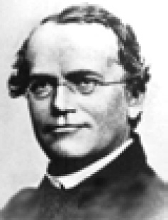
Mendel yasaları Bkz. MENDEL, Johann Gregor.
menenjit Bkz. organsal beyin bozuklukları.
meni (semen) Spermlerin içinde bulunduğu kıvamlı sıvı; atmık. Meni kimi zaman sperm anlamında da kullanılıyor.
menopoz (menopause) Kadınlarda aybaşı kanamalarının kesildiği, doğurganlığın sona erdiği dönem; yaş dönümü. Doğal menopozda bu dönem, 45-55 yaşlar arasını kapsıyor. Kadınlar için sıkıntı yaratan bu geçiş döneminde sıklıkla rastlanan belirtiler sıcak basması, gece terleme, kaygı duygusu, duygu salınımları, vajinal kuruluk, cinsel istek dalgalanmaları, unutkanlık, uykusuzluktan kaynaklanan yorgunluk ve kilo alma yer alıyor. Son yıllarda, yaş dönümü belirtilerini hafifletici etkili tıpsal yöntemler geliştirilmiştir. Bkz. estrojen.
merak (curiosity) 1. Özellikle yeni ya da ilginç şeyleri araştırmak, incelemek; onlara ilişkin bilgi toplamak için duyulan yoğun ve içten gelen istek. Bu dürtü, hayvanlarda ve çocuklarda kendiliğinden beliriyor. Küçük çocuklar, önlerine çıkan, ellerine geçen her şeyi eline alma, tadına bakma, ısırma, koklama, eğip bükme davranışını gösteriyorlar. Bu görünümüyle merakın, insandaki temel öğrenme eğilimlerinden biri olduğu anlaşılıyor. 3-4 yaşındaki çocuğun “Bu ne?”, “Şu ne?”, “O ne?” biçimindeki bitip tükenmeyen sorularıyla, öğrenme merakının doruğa çıktığı görülüyor. Çocuklarda çok erken yaşlarda ortaya çıkması; hayvanlarda da görülmesi, bu merakın doğuştan geldiğini düşündürüyor. Freud ise merakın, bakma içgüdüsünün yüceltilmiş bir türü olduğunu ileri sürüyor. Bkz. öğrenme; yüceltme. 2. Bir şeyi yapma, bir şeyle uğraşma, bir şeyi edinme isteği. 3. Aşırı düşkünlük, istek. 4. Kaygı, tasa. Bkz. bilişsel alan kuramı.
merak, girişim ve becerebilme duygusu Bkz. insanın sekiz çağı ((3) Suçluluk Duygusuna Karşı Girişim Duygusunun Gelişimi).
merdiven yanılsaması (staircase illusion) Gözün, bakıldığı anda sabitlendiği noktaya bağlı olarak merdivenin yukarıya doğru çıkıyormuş ya da aşağıya doğru iniyormuş bigi göründüğü görsel yanılsama. Bkz. tersinden görülebilen figür.
merhamet etmek Bkz. acımak.
merkezcil sinir (contripetal nevre) Sinir akımını çevreden ya da alt merkezlerden merkez sinir sistemine ya da üst merkezlere ileten sinir; getirici sinir, duyu siniri.
merkezci psikoloji (centralist psychology, centralism) Davranışın, beynin (merkezi sinir sisteminin) işlevi olduğu görüşü; davranışı açıklamada beyinde yer alan olayları önemseyen; vücudun yakın çevresinde gerçekleşen olaylara ağırlık veren çevreci psikolojinin karşıtı olan görüş; merkeziyetçi psikoloji; merkezci ruhbilim. Çevreci görüşe göre davranışın kökeni çevrede; yani duyu organları, kaslar ve bezlerdedir. Merkezci görüş, davranışın bir tepki süreci oluşunu yadsıyor ve uyarıcı ile tepki arasında yer alan beyni, bütünleyici ve denetleyici merkez olarak benimsiyor. Bilmeye, sorun çözmeye ve tutumlara ağırlık veriyor. Oysa çevreciler ağırlığı dürtülere, alışkanlıklara ve kassal tepkilere tanıyorlar. Bu iki görüşün orta yerinde bulunan psikoloji ise, bu iki görüşe de katılıyor ve merkez ve çevre süreçlerin etkileşimi üzerinde duruyor. Davranışın, çevresel ve organsal etkenin karşılıklı etkileşimine bağlı olduğunu vurguluyor. Merkezci psikologlara göre çevre, canlıyı ancak çevresel alıcı düzeneklerle etkiliyor ve beyni besliyor. Öte yandan tepki organları da çevreyi, merkez sinir sistemi ile etkiliyor. Ayrıca, davranışın yalnızca uyarıcılara tepki olmadığını; etkilenen canlının uyarıcılara tepkisi olduğunu ileri sürüyor. Böylece, üç etkenin de önemli olduğunu savunuyor. Bkz. çevrecilik; dış çevre.
merkezci ruhbilim Bkz. merkezci psikoloji.
merkezi eğilim (central tendency) 1. Ortalama, ortanca, tepedeğer gibi bir frekans dağılımını gösteren puan. 2. Bir dağılımdaki gözlem ya da deneklerin, mutlak değer ya da yineleniş oranına göre bir noktada toplanma eğilimi; özeksel eğilim.
merkezi eğilim hatası (central tendency error) Herkesi ortalama olarak değerlendirme eğilimi.
merkezi epilepsi Bkz odaksal sara.
merkezi kişilik özelliği (central traits) 1. Allport’a göre, insan kişiliğini en iyi ortaya koyan çekirdek özellikler. Bu özellikler, bir durumdan bir başka duruma geçildiğinde değişmeyen iyimserlik, arkadaş canlılığı, yardımseverlik, babacanlık gibi genelleşmiş özelliklerdir. 2. Başkalarıyla ilgili izlenimlerin oluşumu sırasında, genel izlenimi belirleyici bir biçimde etkileyen kişilik özellikleri.
merkezi oluk Bkz. beyin .
merkeziyetçi psikoloji Bkz. merkezci psikoloji
merkez sinir sistemi (central nervous system) Sinir sisteminin beyin ve omuriliği kapsayan bölümü. Diğeri, boyun ve omuriliğin dışını kapsayan çevre sinir sistemidir. Beyin; ön beyin, orta beyin ve arka beyin olarak üç bölümden oluşuyor. Orta arka beyne beyin sapı da deniyor. Arka beyinde medulla, pons, serebellum ve dört ventrikul bulunuyor. Medulla, kalp basıncı, kalp atışı ve soluk alma gibi işlevleri gerçekleştirdiği için, beynin yaşamsal merkezi olarak niteleniyor. Merkez sinir sisteminin çeşitli yerleriyle lif alışverişi yapan ve ağız ile yüzün duyumunu, hareketlerini yöneten pons, önemli bir merkezdir. Yapı bakımından gelişmemiş bir serebral hemisfer olarak görülebilen serebellum, kassal hareketlere yol açan impulsların düzenlenmesinde etkili oluyor. Arka ve ön beyin, orta beyin alanında birleşiyor. “Taban”da duyusal demetler yukarıya; devimsel demet aşağıya doğru bir yol izliyor. Tektum, duygusal bir görev yapıyor. İlkel görme ve işitme merkezleri, tektumda bulunuyor. Ön beyin, yüksek zihinsel işlevleri oluşturuyor. Talamus, görme demeti, hipofiz, mememsi cisim, hipotalamus, 3. ventrikul, koku soğanı, serebral hemisferler ve bazal gangliyonlar, önbeyinde bulunuyor. Talamus, beynin role ve aktarma merkezliğini yapıyor. Getirici-götürücü demetlerin çekirdekleri, talamusta kontakt kuruyorlar. Hipotalamus ise, denetim merkezi olarak, özerk işlevleri bütünlüyor. Sempatik ve parasempatik işlevlerin düzenleyicisi, hormonları denetleyen merkez olmanın sonucu, duygu ve coşkulara, açlık ve susuzluğa, cinsel uyarılmaya merkezlik yapıyor. Serebral hemisferler; serebral korteks, korpus striatum ve korpus kallosum oluşturuyor. Beynin parçalarından biri de arka beyinden ön beyindeki hipotalamusa kadar uzanan RAS’tır. Merkez sinir sisteminin bir başka parçası durumundaki omurilik, temel işlev olarak ileti görevi yapıyor. Dışardan gelen uyaranları beyne; beyinden gelen uyaranları da gerekli organ ve dokulara iletiyor. Diğer bir işlev olarak da reflekslerin birçoğunu beyne iletmeden yanıtlıyor
Merkezsizleşme (decenter) Piaget’e göre, çocuğun beniçincilikten yavaş yavaş uzaklaşarak başkalarıyla paylaşılan gerçekliğe yönelme süreci. Çocuk, bu süreçte dünyayı başkalarının nasıl algıladığını anlıyor; kendi algılarının, başkalarınınkinden farklılığını biliyor; başkalarından farklı duygulara ve güdülenmelere sahip olduğunu kavrıyor. Bu tanımın bir gereği olarak, somut işlemsel evrede çocuğun, bir durumun ya da nesnenin aynı anda birden çok yanı üzerinde düşünebilme becerisinin varlığını da yansıtıyor. Bkz. bilişsel gelişim kuramı.
mesaj Bkz. ileti.
meslek (profession) Bir kimsenin yaşamını sürdürmek ve geçimini sağlamak için yaptığı sürekli iş ya da çeşitli kuruluşlardaki benzer iş ya da konumlar (pozisyonlar) grubu. Meslek, başkalarının yararına mal ve hizmet üretmek olarak da tanımlanıyor. Bir uğraşın meslek özelliği taşıması için yasal düzenlemesi, belli bir eğitimi, statüsü, kuralları, ölçüleri (normları) ve kullandığı belli araç gereçleri olmalıdır. Buna göre örneğin, doktorluk, öğretmenlik, yargıçlık birer meslektir. Bkz. meslek bilgisi; meslek danışmanlığı; meslek seçimi; meslek eğitimi; meslek psikolojisi; mesleksel gelişim; mesleksel gelişim evreleri.
meslek bilgisi (professional knowledge) Meslek uzmanlık okullarının programlarında yer alan ve amacı öğrencilere meslekleriyle ilgili yetkinlik kazandırmak olan dersler aracılığıyla verilen bilgiler. Değişik mesleklerin özelliklerine; o mesleği seçenlerde aranan ilgilere, bedensel ve zihinsel yeteneklere; iş bulma olanaklarına ve mesleğin sağladığı kazanca ilişkin bilgiler. Okullarda her fırsattan yararlanılarak mesleklere ilişkin yapılan açıklamalar, öğrencileri ilerde seçecekleri mesleklere hazırlamaya yardım ediyor.
meslek danışmanlığı (vocational counseling) Yetenek ve ilgilerine uygun bir mesleği seçmesi, benimsemesi, seçtiği mesleğe hazırlanması ve o meslekte ilerlemesi için kişiye götürülen uzmanlık düzeyindeki düzenli ve sürekli hizmetler. Meslek rehberliği, kişinin ruhsal ve ekonomik bağımsızlık kazanması, sağlıklı bir aile kurması ve toplumsal çevresini geliştirmesi ile yetenek ve ilgilerine uygun bir meslek seçmesi, öbür gereksinimlerini doyurucu düzeyde karşılayıp karşılayamaması ile de yakından ilgilidir. Mesleğinde gelişen kişi, çalışmayı da öğrenmiş oluyor. Bkz. meslek seçimi; rehabilitasyon.
meslek eğitimi (vocational education) Bir mesleği yürütmek için gerekli olan bilgi, beceri ve değer duygularını, o mesleğe hazırlanan öğrencilere kazandıran eğitim. Okula devam etmenin temel amaçlarından birinin de girilmek istenen meslek için gerekli ve yararlı bilgiler kazanmak olduğu düşüncesi, Pestalozzi’ye dek uzanıyor. Bu kanı, 19. yüzyılda dünyanın hemen her yanına yayılmaya başladı ve eğitimin amacı genişledi. Çocuğun ileride gireceği mesleğin gereklerine göre yetiştirilmesi gerektiği bilinci oluştu. İnsan eğitimiyle ilgili çalışmalarda bireyin, gireceği mesleğe ısındırılması gerekiyor. Genel eğitim, yalnızca çok yönlü kuramsal bilgilerle edinilemiyor. İnsan, sağlam ve temelli bir genel eğitimi, meslek yaşamının günlük istek ve gerekleri ile ilişki kurarak edinebiliyor. Genel eğitim, mesleklerle ilgili günlük küçük işler aracılığı ile gerçekleşiyor, anlam ve değer kazanıyor. Bunun gibi, genel bilgi aracılığı ile de meslek eğitimi güçlenip soylulaşıyor. Pestalozzi’nin vurguladığı gerçeğin yaşama geçirilmesi için yüzyıldan fazla zaman boyunca emek harcanıyor. Ne ki eğitimi yalnızca bilgi aracılığı ile sağlamayı amaçlayan anlayış, zihinlerden hâlâ tümüyle sökülüp atılamamıştır. Eğitimi geleneksel kalıntılardan kurtararak çağdaş niteliklerine kavuşturmak, son çözümleme günümüz eğitimci ve öğretmenlerine düşen önemli görevlerden biri konumundadır. Bkz. meslek; meslek bilgisi.
mesleki gelişim Bkz. mesleksel gelişim.
mesleki gelişim dönemleri Bkz. mesleksel gelişim evreleri.
meslek psikolojisi (occupational psychology) Uygulamalı psikolojinin iş ve mesleklerle ilgili olan bölümü; meslek ruhbilimi. Bu psikoloji, mesleklerin istediği özellikleri araştırıyor; bunları ölçecek araçlar hazırlıyor ve bunları uyguluyor. Çalışanların verimi, özgüvenleri ve yaşama bağlılıkları üzerinde etken olan koşulları inceliyor. Yoğunluğun ve iş kazalarının önlenmesi, çalışanların mutlu olması gibi konulara çözümler arıyor.
mesleksel rehberlik (occupational guidance) Bkz. meslek danışmanlığı; meslek psikolojisi; meslek seçimi.
meslek seçimi (vocational choice) Edinilecek iş ve meslek üzerinde kesin karar verme. Bu gereksinim genellikle ilköğretim ve lise sonlarında ortaya çıkıyor. Daha önceki yaşlarda müzik, resim gibi kimi özel yetenekler doğrultusundaki ilgiler dışında meslek ilgisi değişkenlik gösteriyor; meslek ilgisi, 15-16 yaşlarından sonra yerleşmeye başlıyor. Meslek seçimi en iyi, bireyin ilgi duyduğu ve yetenekli olduğu alanlardaki iş ve meslekleri yeterince tanıdıktan sonra, kendi istenci ile gerçekleştiriliyor. Çocuk, meslek seçimi konusunda 10-12 yaşına dek düşlem (fantezi) dönemini yaşıyor. 12-15 yaşlar arası, taklit dönemidir. Bu dönemde çocuk, yakınlarının, tanıdıklarının mesleklerine öykünüyor. Tanıdığı mesleklerin tek bir yanının bile ilgisini çekmesi, o mesleğe heveslenmesi için yetiyor. 15-17 yaşlar arasında genç, gerçeği aramaya başlıyor. 17 yaşından sonra ise gerçekçi döneme tam olarak giriyor. Bu yaştan sonra gençte kendini, içinde bulunduğu toplumsal-ekonomik düzeyden bir üst düzeydeki yaşama ulaştıracak; kendi ilgi ve yeteneklerine uygun mesleklere yönelme eğilimi görülüyor. Bu evrede genci, ilgi ve yeteneklerine uygun mesleklere yönelme yerine, saygınlığı yüksek mesleklere yönelmeye heveslenme tehlikesinden uzak tutmak gerekiyor. Çünkü genç, bu yanlış yönelişle kendisine mutsuz bir gelecek hazırlayabiliyor. Kişi, mesleksel mutluluğu ve onun etkilediği aile mutluluğunu; giderek de toplumsal mutluluğu, kendi ilgi ve yeteneklerine uygun bir mesleği seçip onda ilerlemeye çaba göstererek yaşayabiliyor. İsteyen gençler için edebiyat fakültelerinin psikoloji bölümleri ile rehberlik ve araştırma merkezlerinde ilgilerini ölçtürebilme olanağı bulunuyor.
mesleksel gelişim (vocational development; professional growth) Kişinin mesleğe yönelişinden başlayarak, meslek seçimine, mesleğe uyumuna, meslekte ilerlemesine ve emekliliğine dek süren meslek yaşamının tümünü kapsayan süreç; mesleki gelişim. Bu anlamdaki bir meslek rehberliği için, kişiye ve mesleğe ilişkin, dikkatle toplanmış çok yönlü bilgilere gereksinim vardır.
mesleksel gelişim evreleri (professional development stages ) Sırasıyla; büyüme, araştırma, yerleşme, koruma ve sürdürme ile emeklilik olarak beş evrede gerçekleşen süreçte yer alan aşamalar; mesleki gelişim dönemleri. Bu evreler, evrensel nitelik taşımakla birlikte, toplumlara ve kültürlere göre farklılıklar da gösteriyor. (1) Büyüme Evresi: Doğuştan 14 yaşına dek süren dönem, büyüme evresidir. Bu evrede bireyde açık ve kesin bir mesleksel eğilim görülmüyor; özellikle benlik gelişimi hızla sürüyor. Birey, birtakım meslek düşlemleri oluşturuyor. Bu evrenin sonuna doğru, bireyde yetenek ve ilgiler önem kazanmaya; bunlar doğrultusunda mesleksel eğilimler belirmeye başlıyor. Belirli konulara ve alanlara yönelik yetenek belirtileri ortaya çıkıyor. (2) Araştırma Evresi: Bu evre 15-24 yaşları arasını kapsıyor. Kişi, bu dönemin başlarında geçici mesleksel eğilimler gösterirken, izleyen yıllarda, oluşturduğu meslek tasarımını gerçekle karşılaştırarak denetliyor ve bu tasarımını gerçekleştirme çabası gösteriyor. Kişiye bu çabaları sırasında meslek yaşamındaki olası rolünü ve olanaklarını gözden geçirme; bu rolü gerçek ya da gerçeğe yakın durumlarda deneme fırsatı verildiğinde, gerekli yorumları ve değişiklikleri yapma olanağı tanındığında kişi, kendine uygun bir mesleği seçebiliyor. (3) Yerleşme Evresi: 25-44 yaşları arasında, kişi, gerekli araştırmaları tamamlayıp, hazırlandığı mesleğe yerleşiyor ve meslekte kendini geliştirme çabasına girişiyor. Kendini geliştirmeyi ihmal etmeyen bir kişi, bu evrenin sonlarında, meslek gelişiminin doruğuna tırmanıyor. (4) Koruma ve Sürdürme Evresi: Meslek yaşamının 45-64 yaşları arasını kapsayan bu evrede mesleğe yerleşme ve meslekte kendini geliştirme çabasını bilinçli bir biçimde göstermiş, deneyimlerini sürekli olarak çoğaltmış olan kişiler, doruğa ulaştırmış oldukları verimliliklerini koruyor ve sürdürüyorlar. (5) Emeklilik Evresi: 65 yaş ve sonrası ise emeklilik evresidir. Etkin mesleksel uğraş, bu evrenin başında son buluyor. Bu evre, dinlenme yıllarınu kapsıyor. Kişi, artık, günlerini kendi isteğine göre değerlendirebilme olanağına sahip oluyor. Emekli kişi bu dönemi, mesleğine ilişkin ya da özel ilgi alanına giren konularla uğraşarak geçirebiliyor. Birçok kişi bu evrede, meslek yaşamı boyunca edindiği birikimleri verime, ürüne dönüştürme çabasını sürdürüyor.
mesleksel sağaltım Bkz. mesleksel tedavi.
mesleksel tedavi (occupational therapy) Kişinin bağımsız çalışma yetisini, bedensel ve toplumsal becerilerini geliştirmek; bedensel engellerini iş yapabilecek duruma getirmek amacıyla kendi kendine bakma, oyun, yaratıcı çalışma gibi etkinlikleri kullanma; mesleki terapi, mesleksel sağaltım.
mesleksel terapi Bkz. mesleksel tedavi.
mesleksel uyum (vocational adjustment) Kişinin, kendi istek ve yeteneklerine en uygun iş ya da mesleği yürütmek için yeteneklerinden yararlanma, ruhsal uyum sağlama derecesi; mesleki intibak.
mesleksel yetenek (vocational aptitude) Belli bir meslek için gerekli ilgi, güdülenme, beceri ve kişilik özellikleri.
meslek testi (occupational test) 1. Bir kişinin belli bir iş ya da meslek dalına ne ölçüde uygun olduğunu kestirmek amacıyla kullanılan test. 2. Belli bir iş ya da meslekte çalışan bir kişinin meslek yeterliğini ölçmede kullanılan test. Bkz. psikolojik testler.
MESMER, Franz Anton (1734-1815) Mesmercilik diye anılan tedavi yöntemlerini geliştirip ruhsal tedavide hipnoz uygulamalarının öncüsü olan Avusturyalı hekim. Mesmer, o zaman İsviçre sınırları içinde olan Weil (bugünkü Fac) yakınındaki Iznang köyünde doğdu. Meersburg’da öldü. Üç ayrı yüksek öğrenim denemesinden sonra Viyana Üniversitesi tıp Fakültesinde karar kıldı. 1766’da doktorasını tamamlayarak aynı üniversitede çalışmaya başladı. Zengin bir dulla evlendi ve Viyana’nın seçkin çevrelerinde adını duyurdu. Para sıkıntısı çekmeden araştırmalarını sürdürdü ve hızla artan hastalarına kendi geliştirdiği manyetizmayla tedavi yöntemlerini uyguladı. Ancak, bir süre sonra meslektaşlarınca büyücülük yapmakla suçlanınca 1778 başlarında Viyana’dan ayrılarak Paris’e yerleşti. Birkaç yıl içinde Mesmer’in yöntemleri yaygın bir tedavi yöntemine, hatta giderek gizli bir Mason örgütüne dönüştü. Bunun üzerine Mesmercilik, üniversiteli bilim adamları ile geleneksel tıp hekimleri arasında ve sarayda terdirginlik yaratmaya başladı. 1784’te hükümetin isteği üzerine aralarında Lavoisier, Benjamin Franklin gibi ünlü bilim adamlarının da bulunduğu bir kurul, Mesmer’in yöntemlerini inceledi ve bunların bilim dışı olduğu sonucuna vardı. Ardından Fransız Devrimi’nin başlaması üzerine, Mesmer, Fransa’dan ayrıldı. Birkaç Avrupa ülkesini dolaştıktan sonra İsviçre’ye döndü ve yaşamını, hekimlikten ve tartışmalardan uzak olarak orada sürdürdü. Mesmercilik, insan vücudunun bir mıknatıs gibi manyetik akım depoladığı ve insanın bu görünmez akışkanı, dokunduğu kişilere iletebileceği inancına dayanıyordu. Astrolojiyle de ilgilenen Mesmer, kozmik güçlerin, özellikle gezegenlerin, çekim etkisini yalnızca evrende değil, insan üzerinde de gösterdiğine inandığı için, bunu hastaların tedavisinde kullanmayı düşündü. Ona göre, bu güçler, insan vücudundaki sıvı dengesini etkileyerek kişinin sağlıklı ya da hastalıklı olmasına yol açıyordu. Öyleyse hastanın vücudundaki bu görünmez akışkanı denetim altına almak gerekirdi. Mesmer, başlangıçta bu işte mıknatıstan yararlanırken, bir süre sonra, dokunduğu her şeyin mıknatıslandığına ve sağlık veren akışkanın kendi vücudunda var olduğuna inanmaya başladı. Hayvansal manyetizma diye adlandırdığı bu etki, kendi parmaklarından hastanın vücuduna akıyor ve akışkanın odaklandığı yerleri etkileyerek sıvı dengesini sağlıyordu. Meslektaşlarınca şarlatanlıkla suçlanmış olsa da özellikle hekim ile hasta arasındaki ilişkiye verdiği önemle ruh hastalıklarının tedavisinde yeni bir uygulamayı başlatan kişi oldu. Sonraki yıllarda İngiliz cerrah James Braid’in öncülüğünde Charcot ve Freud’un da kullandığı hipnoz yöntemleri, ruh hastalıklarının analiz ve tedavi yöntemleri arasına girmiş oldu. Başlıca yapıtları: Dissertatio physico-medica de planetaruminfluxu (1766) (Gezegenlerin Etkisinin Fiziki ve Tıbbi Yorumu), Mémoire sur la découverte du magnétisme animal (1779) (Hayvansal Manyetizmanın Keşfine İlişkin İnceleme).
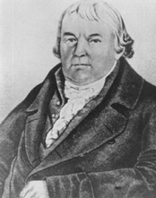
Mesmercilik Bkz. hipnoz; MESMER, Franz Anton.
mesuliyet Bkz. sorumluluk.
meşguliyet terapisi Bkz. uğraş tedavisi.
metabolik anormallikler. Bkz. şişmanlık.
metabolizma (metabolism) Canlı organizmada ya da canlı hücrelerde hareketi, enerjiyi sağlayarak gelişimi ve işleyişi sürdürmek için oluşan biyolojik ve kimyasal değişimlerin bütünü; yapım-yıkım. Metabolizmanın karmaşık maddelerin parçalanarak basit maddelere dönüştürülmesi de içinde olmak üzere, örneğin, karmaşık protein moleküllerinin basit maddelere dönüştürülmesi için parçalanması ve indirgenmesine katabolizma (yıkım); basit organik maddelerden, canlı beden için gerekli olan karmaşık maddelerin üretildiği sürece de anabolizma (yapım) deniyor.
metafizik (methophysics) 1. İlk nedenler, evrenin en son doğası gibi duyu organlarıyla, yaşantılarla bilinenin ötesindeki gerçeği inceleyen, araştıran felsefe dalı; fizikötesi, doğaötesi. 2. Parapsikoloji. Bkz. varlıkbilim.
metafizik psikoloji Bkz. doğa ötesi psikolojisi.
metafor (metaphor) Bir şeyin, başka bir şeyin yerini tutması; bir şeyi, başka bir şeyin yerine kullanma.
metagüdülenme (metamotivation) Maslow’a göre, bireyi, temel gereksinimler karşılandıktan sonra devreye girerek kişilik gelişimine, olgunlaşmaya ve özgerçekleştirime yönelten güdüler.
metapsikoloji (metapsychology) 1. Ruhsal aygıtın, davranışların kökeni, yapısı, amacı ve benzerleriyle ilgili felsefe sorunlarına yönelik kuramsal, spekülatif bir yaklaşım, doğaötesi pskolojisi. Bu yaklaşım, görgül olanın ötesine geçiyor ve psikolojinin genel ilkelerini, yasalarını tümüyle speülatif bir düzlemde belirlemeye çalışıyor. 2. Freud bu terimi, geliştirmiş olduğu alt psikanalitik kuramlar için kullanmıştır. Bkz. metafizik psikoloji; psikanaliz.
metin (text) Postmodernistlere göre, özel bir kurgulama olarak her türlü kuram, olay, kişi, yer ya da şey. Bu tanım da içinde olmak üzere her şey, olkunması gereken bir metindir. Bkz. okuma.
metodoloji Bkz. yöntembilim.
mevsime bağlı duygusal bozukluk (Seasonal Affective Disorder (SAD)) Sonbahar ve kış aylarında günlerin kısalması nedeniyle ortaya çıkma ve yinelenme eğilimi gösteren depresyon, letarji, ruhsal-devimsel yavaşlama, aşırı uyuma, aşırı yeme (aşırı karbonhidrat gereksinimi) gibi belirtilerle tanınan bir ruh durumu bozukluğu; kış depresyonu; kış uykusu. Bu bozukluk, kişinin ışık miktarının eksilmesine ve havaların soğumasına verdiği olumsuz tepki olarak yorumlanıyor. Bozukluğun, gün ışığına bağlı olarak serotonin düzeyinin düşmesi nedeniyle ortaya çıktığı sanılıyor. Parlak ışık ve ilaçla tedavi ediliyor. Bkz. ışık kutusu.
meydan korkusu Bkz. alan korkusu.
MEYER, Adolf (1866-1950) ABD’li psikiyatyrist; sinir hastalıkları uzmanı. Meyer, İsviçre, Niedereeningen’de doğdu; Maryland, Baltimore’da öldü. Zürih Üniversitesi Tıp Fakültesi’i bitirdi. Çeşitli akıl hastanelerinde çalıştıktan sonra 1910’da Johns Hopkins Üniversitesi’nde psikiyatri profesörü oldu. Freud ve Pavlov’un etkisinde kaldı ve psikoloji ile fizyolojinin ilkelerini psikobiyoloji adıyla birleştirdi. Kişinin bütünüyle eyleme katılmasından yola çıkarak hastanın kişiliğini değişik açılardan belirlemeye çalıştı. Hastanın geçmişiyle ilgili olayları, kalıtım ve çevre etkenlerini; bedensel, toıplumsal ve iktisadi, bilinçli ve bilinçsiz etkenleri birlikte inceleme yöntemini ABD psikyatrisine Meyer kazandırdı. Clifford Whittingham Beers ile birlikte, toplumsal ve bireysel yolla ruh hastalıklarını önlemeyi amaçlayan ruh sağlığı hareketini başlattı. Nöroloji, patoloji, psikiyatri ve ruh sağlığı konularında yapıtları bulunuyor. Bkz. dünyada ruh sağlığı.
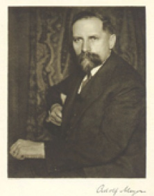
mezhep (sect) Bir dinsel inanışın farklı yorumlarını benimseyen alt kolları.
mezomorf Bkz. Sheldon’un bedensel yapı sınıflaması.
Mısırlılarda eğitim (education in Egypt) Mısırlılar, Nil nehri sayesinde insanlık tarihinin en eski dönemlerinde güçlü bir uygarlık yaratmışlardır. Herotot’a göre Mısır, Nil nehrinin bir armağanıdır. Mısırlıların astronomi, geometri alanlarında ilerlemiş olmalarının başlıca nedeni olarak her yıl taşan ve çevresindeki tarlaların sınırlarını karıştıran; ancak, bununla Mısır’a bolluk da getiren Nil nehri gösteriliyor. Çünkü Nil, Mısır halkını mevsimleri izlemeye, toprakların ölçülmesine (geometriye) ilişkin bilgileri öğrenmeye zorlamıştır. Böyle de olsa Mısır’da her türlü bilgiye sahip olanlar ve eğitimin birinci derecede temsilcileri, rahiplerdi. Tüm bilgilerin özü, kutsal kitaplarda yazılıydı. Bunları ellerinde tutan ve büyük tapınakların çevresinde toplanan rahipler, bir sınıf oluşturmuştu. Bunlar, doğal olarak, varlıklarını sürdürebilmek, bilgilerini kuşaktan kuşağa aktarmak için sınıflarını örgütleyip yetiştirme yolunu izliyorlardı. Rahiplerin yönettiği okullar vardı. Savaşlarda önderlik yapacak kişileri yetiştirmek amacıyla bir de özel akademi kurulmuştu. Okuma yazma, iki bin yıl boyunca, rahip okullarında eğitilen memurlarla yazıcıların tekelinde kaldı. Eski Mısırlılar, papyrus adlı ağaççıktan kâğıt yapmayı başarmış ve hiyeroglif denilen yazıyı bulmuşlardı. Bu yazı, şekillerden oluşuyordu. Zamanla değişmekle birlikte bu yazı, dekoratif karakterini korudu. Mısırlılarda yazı yazma yaygındı. Büyük tapınak okullarında yetiştirilen ve yazıcı denilen bilgili kimseler, yurdun her yanına dağılıp hizmet veriyorlardı. Ramses zamanında bu kurumlara prensler de alınmaya başlamıştı. Ramses’in oğlu Seti döneminde tapınak okulları çok gelişti. Rahipler, memurlar, doktorlar, kadastrocular ve yazıcılar yetiştirildi. Kurumun ilköğretim ayağında yüzlerce çocuk okuyordu. Eski Mısır’da aile eğitimine de önem veriliyordu. Mısırlı kadın, bir yandan iyi bir ev kadını olmaya çalışıyor; bir yandan da çocuklarının eğitimi ile uğraşıyordu. Kadınlar, hem erkeklerden hem de çocuklardan saygı görüyorlardı. Aile eğitimini okul eğitimi izliyordu. Okullar genelde ilkokul ve yüksek dereceli okul olarak iki grupta toplanıyordu. Bu okullarda okuma yazmanın yanı sıra pratik işlere, cimnastiğe, zamanın bilimlerine, din ve ahlak eğitimine yer veriliyordu. Bu ülkenin yüksek okulları, eski Yunanlılara örnek oldu. İ. Ö. 7. yüzyılda birçok Yunanlı, Mısır’a gelerek bu okullardan yararlandı. Yunan düşünürleri, Mısırlıların geliştirdiği aritmetik, geometri ve astronomiden esinlendi. Bu anlamda Mısırlılar, Batılıların hocası oldu. Bkz. eğitim tarihi.
migren (migraine) Başın bir ya da iki yanında birden oluşan ve dönemsel olarak yaşanan ağrı. Migrene mide ve bağırsak bozuklukları, baş dönmesi, bitkinlik, sinirsel gerilim, görme alanında kıvılcım ve lekelerin belirmesi, aşırı duyarlık, çöküntü de eşlik edebiliyor. Duygusal zorluklar, aile baskısı; duyarlı, hırslı, katı kişilik, migreni oluşturan önemli etkenler arasında yer alıyor. Okul başarısızlığı ve aile baskısı, korku gelişimi, okul yaşlarında görülen migrenin en önemli nedenleridir. Migrenin iyileşmesi için, evde, okulda, iş yerinde sorun yaratan etkenleri ortadan kaldırmak; ilaçla tedavi ve ruhsal tedavi uygulamak gerekiyor. Bkz. ruhsal kökenli bedensel bozukluklar.
mikroorganizma Bkz. mikrop.
mikrop (microbe) Çeşitli hastalıkların nedeni olabilen, gözle görülmeyen tek hücreli canlıların ortak adı. Mikroplar yalnızca mikroskopla görülebiliyor. Büyüklükleri birkaç mikronu aşmıyor. Kimileri ise ancak elektron mikroskobu, fluoresan mikroskop gibi özel mikroskoplarla görülebiliyor. Yuvarlak ya da çomak biçiminde olanlar bulunuyor. Kimi zaman aralarında birleşerek gruplar ve gözle görülebilen sineriler oluşturabiliyorlar. Bölünerek ya da sporla çoğalıyorlar. Mikropların zararlı olan salgılarına toksin deniyor. Mikropların, insan ve hayvanlarda hastalık oluşturmayan; dahası, organizmaya yararlı olan türleri de bulunuyor. Mikroplar, havada, karada, suda bulunabiliyor. Büyük çoğunluğu, 100 santigrat derecenin üstündeki sıcaklığa dayanamıyor.
mikrosefal Bkz. küçük kafalı.
mikroveri Bkz. yığma veri.
milat yaşı (chronologic age) Doğum tarihine göre hesaplanan yaş; kronolojik yaş. Bkz. biyolojik yaş.
Milgram deneyi (Milgram experiment) Sosyal psikolog Stanley Milgram’ın 1974 yılında zararlı davranışların gelişiminde yetkenin (otoritenin) etkisini göstermek amacıyla yaptığı deney. Milgram, sözde elektrik şoku uygulayan bir deney düzeneği hazırlıyor. Deneklere (öğretmenlere), yanlış yanıt veren öğrencilere elektrik şoku uygulamaları yönergesini vererek insanların, öğrencilerin yaşamını tehlikeye attığını bile bile bu yönergeye ne ölçüde uyduklarına ilişkin veriler topluyor. Gerçekte, deneyi yapanlarla işbirliği içinde olan sözde öğrenciler ise, bile bile pek de parlak olmayan yanıtlar veriyorlar. Bu yanıtlar karşısında öğretmenlerden, giderek daha yüksek şoklar uygulamaları isteniyor. Deneye katılan öğretmenlerin yüzde 65’i, en yüksek düzey olan 450 wolt elektrik akımını uygulamakta duraksamıyor. Birçoğu karşı çıkıyor; kimileri ağlıyor; ama bilim insanının yetkesine boyun eğiyor. Bu deney, savaş, suç, ceza gibi konulara ilişkin ilginç sonuçlar ortaya çıkarmış; insan doğası, gerçek benlik gibi soyut kavramlara karşı kuşku yaratmanın ötesinde, davranışın biçimlenmesinde yetkenin etkisini gözler önüne sermiştir. Çok eleştirilen Milgram’ın bu deneyinin birçok üniversitede okutulması yasaklanmıştır. Bkz. boyun eğme; Zimbardo deneyi.
militan (militant) Bir düşünceyi, bir inancı, bir ideolojiyi ya da siyasal görüşü, zora başvuracak kadar şiddetle ve ödünsüz savunan (kişi).
millet Bkz. ulus.
Millet Mektepleri Bkz. Ulus Okulları.
milli kütüphane (national library) 1948’de Ankara’da Saraçoğlu mahallesinde halkın yararına sunulan büyük kitaplık. Milli kütüphaneler, bulundukları ülkelerin bütün düşünce ürünlerini eksiksiz toplayan ve ayrıca başka ülkelerin değerli yayınlarını seçerek bir araya getiren; bunları düzenli izleyip sağlayan merkizi bilim kütüphanelerdir. Ülkemizde Ankara’dan başka İstanbul ve İzmir’de de milli kütüphane bulunuyor.
milliyet Bkz. uyruk,
milliyetçilik Bkz. ulusçuluk.
mimik(gesture) İletişim amacıyla kullanılan el kol hareketleri, yüz anlatımı gibi sözel olmayan simgesel anlatım biçimleri.
mimik spazmı (mimic spasm) Göz ya da yüz kaslarında yinelenen seğirmeler. Bu tür seyirmeler, boyunda, omuzlarda da görülebiliyor. Çocuklarda, özellikle aşırı etkinlik ve dikkat eksikliği bulunanlarda bu bozukluk yaygın olarak görülüyor. Nedeni kesin olarak bilinmemekle birlikte, stresle ilişkili olabileceği düşünülüyor. Tiklerin çoğu tedavi gerektirmiyor; gerekli eğitimle kendiliğinden geçiyor.
Minnesota çok yönlü kişilik envanteri (Minnesota Multiphasic Personality Inventory (MMPI)) Hathaway ve Mc Kinley’in geliştirdiği; ABD’de yaygın olarak kullanılan ve Türkçeye de uyarlanıp standartlaştırılmış olan kişilik envanteri. MMPI, normal deneklerin yanıtları ile anormal bireylerin yanıtlarının karşılaştırılması sonucunda 10 alt test ile 3 geçerlik alt testinden oluşturulmuştur. 10 alt test, hipokandri, depresyon, isteri, psikopatik sapma, erkeklik-dişilik, paranoya, psikasteni, şizofreni, hipomani ve toplumsal içedönüklük niteliklerini ölçüyor. Geçerlik alt testleri ise L, F ve K adlarıyla biliniyor. Geçerlik alt testleri, savunucu tutumu, kendini olduğundan iyi ya da kötü gösterme eğilimlerini ölçüyor. MMPI, hastanede yatan hastalar üzerinde yapılan çalışmalarla standartlaştırılmış olduğu için, daha çok, psikiyatri alanına giren hastaların tanısında kullanılıyor. Anormal (bozuk) davranış eğilimlerini oldukça iyi ölçüyor. Bu nedenle Minnesota Çok Yönlü Kişilik Envanteri, danışmada ve deneysel çalışmalar için belli kişilik özellikleri bakımından yüksek ve düşük olan deneklerin seçiminde yararlı oluyor. Uygulamada alt test puanları, standart t puanlarına çevrildikten sonra, her alt testten elde edilen puanlar bir çizgi ile birleştirilerek bir profil elde ediliyor. Sonucun yorumu, bu profilin dağılımına, eğimine ve yüksekliğine bakılarak yapılıyor. Alt testler, puanlarına göre tek tek yorumlanamıyor. Örneğin, şizofreni alt testinden yüksek puan almış olan birinin, şizofren olduğu yargısına varılamıyor. Bu testlerde, bu puanın, öteki alt test puanları içindeki göreceli yeri de önem taşıyor. 18 yaş ve bu yaşın üstündeki kişilere uygulanan ve özgün yapısıyla 550 soruyu içeren bu test, çok çeşitli alanlarda uygulanıyor. Örneğin, klinik görevliler, bu testten, ruhsal sorunları belirlemede yararlanırken, psikologlar, kamu güvenliği alanında çalışanların kişiliklerinin işe uygunluk derecesini belirlemede; araştırmacılar, temel kişilik parametrelerini belirlemede yararlanıyorlar. Eleştiriler ve güncelleme gereksinimi karşısında gözden geçirilen testin soruları, 567’ye ulaştırılmıştır. Yenileştirilen bu test, 15 kadar ayrı ölçeği içeriyor.
mistisizm Bkz. gizemcilik.
mit (myth) 1. Kaynağı ve yazarı bilinmeyen; kimi doğa olaylarını ya da bir kültürün, toplumun tarih, gelenek, kurum, dinsel tören ve benzerlerine ışık tutan masalsı anlatılar. Bu nitelikleriyle mitler, içinde tanrıların ve kahramanların da bulunduğu yaradılışı, başlangıçlarda olanları, kutsal bir tarihi anlatıyor. Freud, mitleri klasik psikanalizde hem bir psikolojik bilgi kaynağı hem de psikolojiden elde edilen bilgilerin tarihsel bir doğrulaması olarak değerlendirmiştir. Oedipus karmaşası, bunun bilinen en iyi örneğidir. Freud, mitlerle rüyaları karşılaştırmış ve mitlerin ait oldukları kültürlerin tarihini olduğu gibi, insan doğasını da aydınlattığına inanmıştır. Ona göre mitlerin anlattığı, uygar insanın bastırdığı, unuttuğu tarihsel, ilkel bir olaydır. Onun hem hastalıklı süreçleri hem de simgeciliği açıklarken sıklıkla mitlere gönderme yapmasının nedeni budur. Mitlere Jung da büyük bir önem vermiş ve mitleri, bilinçdışı etkinliklerinin simgeleri olarak değerlendirmiştir. Ona göre, dinsel simgeler gibi mitler de uydurulmuş değildir; bilinçdışından kaynaklanmıştır. Mitler, iç gerçekliği bilimsel gerçeklerden daha doğru tanımlıyor ve ortak bilinçdışındaki temel düşünceleri temsil ediyor. 2. Yanlış, dayanaksız; ama o denli de yaygın bir inanç. Bkz. ilkörnek; masal; ortak bilinçdışı.
mitoloji (mitology) 1. Belli bir kültür, toplum ya da kişiyle ilgili mitleri konu alan; bunların doğuşlarını araştıran, anlamlarını inceleyen, yorumlayan bilim; söylence bilim. 2. Bir yöre, ülke ya da uygarlığa özgü mitler, efsaneler ya da masallar bütünü. Bkz. Eros.
mitos (mityos) Büyümeyi ve kişinin gelişimini sağlayan ve ana hücrenin kromozom sayısını sabit tutan bölünme biçimi.
mizaç Bkz. huy.
mod Bkz. tepedeğer.
modalite (modality) 1. Bireyin bilgi alma ve öğrenme yolu; duyu kipi, duyu kanalı, duyu türü. 2. Belirtileri gidermek ya da davranış değişikliği yaratmak amacıyla kullanılan özel bir tedavi yöntem ve tekniği. Örneğin, detoksifikasyon (antagonist ilaç kullanımı), güdüsel yönlendirme; bilişsel, davranışsal tedaviler, grup tedavisi, toplumsal beceri kazanma eğitimi, meslek danışmanlığı, yardımlaşma grupları ve benzerleri, madde bağımlılığı tedavisi modalitelerindendir. 3. Bir frekans dağılımındaki başlıca tepe noktaları.
model (model) 1. Bir araştırma evreni içinde yer alan öğelerin aralarındaki ilişkileri anlamak, bunları çözümlemek ya da bunların neden-sonuç ilişkilerini ortaya çıkarmak amacıyla oluşturulan kuramsal, matematiksel ya da kavramsal ilişkiler yumağı. Bkz. kuram. 2. Yapımı planlanan bir işin üretiminde kılavuzluk edecek örnek.
model alma Bkz. toplumsal öğrenme.
modelleme Bkz. BANDURA, Albert ; taklit.
modern Bkz. çağcıl; çağdaş.
modern toplum Bkz. çağcıl toplum.
modülerlik (modularity) Biliş psikolojisinde, her biri, belli bilgi türlerini işleyen ve birbirinden bir ölçüde bağımsız bir dizi modülden oluştuğunu varsayan kuramların ortak adı. Modüler biliş kuramının önde gelen savunucularından biri olan Jerry Fodor, kimi ruhsal süreçlerin kendine yeterli (modüler) olduğunu savunuyor.
molekül (molecule) Bileşik cisimlerin ve gazların tüm niteliklerini taşıyan ve bir araya gelerek maddeyi oluşturan en küçük kısmı; zerre. Molekül, birbirine benzeyen ya da birbirinden ayrı olan atomların yığılmasıyla oluşuyor. Kimyasal değişimlerle yeni cisimlerin doğması da bu moleküllerin yer değiştirmesiyle gerçekleşiyor. Bkz. DNA
monarşi (monarchy) Dinsel ya da simgesel öneme sahip olanlar da içinde, tüm siyasal nüfuz, yetki ve güçlerin seçim dışı yöntemlerle ve daha çok, miras yoluyla yönetimi ele geçiren tek bir kişide toplanması temeline dayanan yönetim biçimi.
mongolizm Bkz mongolluk.
mongolluk (Down syndrome) Kromozom bozukluklarından kaynaklanan ve yarık dilli, çekik gözlü, basık yassı burunlu, basık kafalı, kısa geniş boyunlu, geniş ve kısa parmaklı, yumuşak kemikli bir yapıyla birlikte ortaya çıkan bir geri zekâlılık türü; mongolizm. Down hastalık tablosu (Down sendromu), ilk hücrenin oluşumu sırasında kromozomların 21. çiftine 3. bir kromozomun eklenmesiyle oluşuyor. Sonuçta mongolların hücrelerinde 47 kromozom bulunuyor. Zihinsel gerilik düzeyi olaydan olaya değişse bile, böyle çocukların tümünde zihinsel gerilik bulunuyor. Bunların yüzde 95’inde ZB, 50’nin altındadır. En çok yaşlı anne ve babaların çocuklarında rastlanan bu bozukluk, yaşlı annelerin çocuklarında daha sık görülüyor. Gebelikte X ışınlarından etkilenme, sarılık, kızamıkçık geçirmiş olma ve ilaç kullanma gibi etkenler de kromozomal anormalliklerin nedenleri arasında yer alıyor. Bkz. kromozom bozukluk belirtileri.
mongoloid (mongoloid) Mongolluk hastalığı olan.
MONTESSORİ, Maria (1870-1952) İtalyan eğitimci ve psikiyatrist; kendi adıyla anılan çocuk eğitimi yönteminin kurucusu. Montessori, Ancona yakınında Chiravalle’da doğdu; Hollanda’da Noordwijkaan Zee’de öldü. Geleneksel anlayışta bir subay olan babasının karşı çıkmasına karşın, annesinin yüreklendirmesi ve desteği ile eğitimini sürdürdü. 14 yaşında bir teknik eğitim enstitüsüne girdiyse de sonra biyolojiye ilgi duyması üzerine, tıp eğitimine yöneldi. O yıllarda kadınların üniversitelere girmesi, büyük bir kararlılık ve cesaret istiyordu. 1894’te İtalyaða tıp doktoru unvanını kazanan ilk kadın olarak, yaşamı süresince uluslararası kadın hakları kongrelerinde etkinliklerini sürdürdü. Asistanlığa başladığı Roma Üniversitesi Psikiyatri Kliniğinde ilk kez, geri zekâlı çocuklarla sürekli ilişki kurma olanağını buldu. Engelli çocuklara uygulanacak tıpsal tedavinin yanı sıra, onlara eğitsel çalışmalar yaptırılmasının gerekliliğine inanıyordu. 1898’de, iyileştirilmeleri olanaksız geri zekâlı çocukların bulunduğu Devlet Ortofreni Okulu’na yönetici olarak atandı. Çocukları eğitmek amacıyla onlarla zevkle doğrudan kendisi ilgilendi. Çocuklara uygulanan yöntemleri geliştirdi ve yine zevkle öğretmenleri eğitmeyi sürdürdü. 1901’de araştırmalarını yapmak amacıyla okuldan ayrıldı. Bir yandan bir kız okulunda sağlıkbilim dersleri verdi, bir yandan da Roma Üniversitesi Eğitim Fakültesi’nde araştırmalar yaptı. 1904’te aynı üniversitede profesör oldu.1906’da İtalyan Hükümeti Montessori’yi yoksul semtlerden biri olan San Lorenzo’nun kalkındırılması tasarımı içinde, 3-6 yaşlar arasındaki çocukların eğitilmesiyle görevlendirdi. Montessori, daha önce geliştirdiği yöntemi, kültürel bakımdan geri kalmış olan bu çocuklara uyguladı. Bu yoksul yörede, 30 bin kişi barınıyordu. Yöre halkı, işçiler, dilenciler ve hapisten yeni çıkmış işsiz güçsüzlerden oluşuyordu. Montessori bu yörede 1907’de ilk Çocukların Evi’nin yönetimini üstlendi. Öğrencileri, ürkek, beceriksiz, aptal görünüşlü 60 çocuk oluşturuyordu. Bunlar, yürümeyi bile beceremiyor; her şeyden korkuyor, ağlıyor; verileni almaktan çekiniyordu. Ailelerinin ya işe gitmesi ya da iş aramakta olması nedeniyle bunlar, aile içinde hiç eğitilmemişlerdi. Bu özellikleri, onların, yeni yöntemleri kolaylıkla benimsemelerini sağladı. Çocukların Evi, bir tür psikoloji laboratuvarı olarak görev yaptı. Burada “özgür toplumsal yaşam”, “kendiliğinden disiplin”, “zorlanmadan okuma yazma” gibi, bütün dünyanın ilgisini çeken önemli deneyler gerçekleştirildi. Bir Çocukların Evi de Milano’da 1908’de Musevi toplumcular’ın emekçi halka hizmet amacıyla kurduğu örnek işlik, konut ve sosyal tesislerin yer aldığı Umanitaria’da açıldı. Buradaki eğitim için öngörülen bilimsel malzemenin sağlanması, Montessori’nin çalışmalarına büyük destek oldu ve yeni Montessori okullarının açılmasını sağladı. Montessori, 1922’de, tüm İyalyan okullarını denetlemekle görevlendirildi. Ancak, faşit yönetimin başa geçmesi nedeniyle 1934’te İtalya’yı terk etmek zorunda bırakıldı. Bir süre İspanya ve Seylan’da (bugünkü Siri Lanka’da) kaldıktan sonra Hollanda’ya yerleşti. 40 yıl boyunca Avrupa’yı, Hindistan’ı ve ABD’yi içine alan gezilerinde konferanslar verdi, yazdı, öğretmenler için eğitici seminerler düzenledi ve yeni Montessori okullarının açılmasına yardımcı oldu. Yapıtları, en az 20 dile çevrildi. Montessori’nin okulöncesi ve ilköğretim öğrencileri için geliştirdiği yöntem; davranışlarda sorumluluğu ihmal etmeyen özgürlük; duyular yoluyla algılamanın geliştirilmesi; oyun ve beden hareketleriyle bedensel uyumun sağlanması ilkelerine uygun bir eğitim uygulamasının yaşama geçirilmesini istiyordu. Çocuğa tanınan bedensel özgürlük, onun girişkenliğini ve algılama gücünü geliştiriyordu. Çocukların kendi kendilerine kullanabildikleri oyun malzemesi; okuma, yazma ve hesaplamada, kısa bir sürede başarılı olmayı sağlıyordu. Montessoi yöntemi, davranışçılık ve Freudculuk gibi 20. yüzyılın önde gelen akımlarından değil; Rousseau, Fröbel ve Pestalozzi’nin çalışmalarından etkilendi. Deneysel psikoloji yöntemlerinde, Itard’ın gözlem ağırlıklı çalışmalarından ve E. Seguin’in geri zekâlı çocuklarla ilgili deneylerinden çokça yararlandı. Avrupa’da yaptığı araştırmalar sonucunda, orada uygulanan eğitim yöntemlerinin, öğrencileri sürekli olarak sınıflarda oturmak zorunda bıraktığını; bunun da çocukların yeteneklerini geliştirmediği gibi, onları edilginliğe iterek zekâlarını körelttiğini gözlemledi. İlk kitabı olan Montessori Yöntemi’nde, 3-6 yaşlar arasındaki çocuklar üzerinde yaptığı denemelerin sonuçlarını açıkladı. Çok basit gibi görünen araç gereçlerin, çocukların yoğun ilgisini çektiğini gördü. Örneğin, sayıları artırılarak dizilen boncuk sıralarının matematikte sayıların kavranmasını kolaylaştırdığını; çeşitli boylardaki tahta tabletlerin yan yana dizilmesinin, gözü soldan sağa okumaya alıştırdığını belirledi. Küçükten büyüğe doğru sıralanan tahta silindirlerin yuvalarına yerleştirilmesi, küçük kas gelişimini etkiliyordu; 3-6 yaş çocukları, bu tür malzeme ile, çevreden etkilenmeden 15-60 dakika kadar ilgileniyorlardı. Bunun ardından yaptırılan zorunlu ödevin yorgunluğunu da duymuyorlardı. Disipline uymayan çocuklar bile isteklerine bağlı olarak yaptıkları bu tür işlerden sonra, küme içinde daha uyumlu oluyorlardı. Montessori yönteminde odaların temizlik ve düzeni, sofranın kurulması ve toplanması gibi ev işleri, birlikte gerçekleştiriliyordu. Kendi kendini eğitme ve yönlendirme, girişkenliği artırma, bu yöntemin temel taşlarıydı. Uygulayıcı (öğretmen), saymak için boncukları, geometrik şekillerden oluşan boz-yap’ları, büyüklük sırasına göre dizilmiş tahta küpleri, silindirleri, ölçü kaplarını çocuklara gösterip ne yapılacağını açıkladıktan sonra, oynamaları için onları kendi başlarına bırakıp geri çekiliyor ve edilgin bir gözlemcilik yapıyordu. Yalnızca, yapılmaması gereken davranışlarda onları uyarıyordu. Çocukların, kendi deneyleri ile önlerindeki engelleri aşmaları bekleniyordu. Başarmanın sevincini ancak o zaman tadıyorlardı. Montessori’ye göre, çocuğun belli yaşlarında görülen duyarlık dönemlerindeki zihinsel yeti, bilginin özümsenmesinde çok elverişli bir olanak yaratıyordu. Çocukların öğrenmeye en açık olduğu zamanlar, bu dönemlerdi. Çocuklar, bu duyarlık dönemlerinde yaratıcı anlar yaşıyorlardı. Bu nedenle söz konusu dönemlerin çok iyi değerlendirilmesi; yapay, sağlığa aykırı sınıflarda çocuğun zamanının boşa harcanmaması gerekiyordu. Çocuk için en doğal ödül, bir işin başarılmasıdır; bunun dışında bir ödüle gerek yoktur. Geleneksel okullarda verilen ödüller ve cezalar, çocukların doğal davranışlarını, sağlıklı gelişimlerini kısıtlayıcı özellikler taşıyor. Geleneksel okulun ödül ve cezaları, çocuğun dikkatini, sorunun özünü oluşturan öğrenmekten uzaklaştırıyor. Öğrenci çabaları için en büyük ödül ise zihinlerde bir kıvılcım oluşturabilmek, bir uyarının, yerine vardığını görebilmektir. Çocuklardan daha güçlü olması nedeniyle çoğu kez onlara boyun eğdiren öğretmen, böyle yapacağına, çocuklara ışık tutan sevecen bir yol gösterici olduğunda, çocuğun sevgisini ve güvenini çok daha kolay kazanıyor. Montessori, sağlıklı disiplin konusuna da eğilmiş ve canlı, etkin bir disiplin olan iç disiplinin, özgür bir öğrenme ortamında geliştiğini belirlemiştir. Baskıların kalkması durumunda, yıldızları yönlendiren doğa yasalarının, insanları da yönlendireceğini ileri sürmüştür. Dilsizler gibi yapay bir sessizlik içinde, hareketsiz durmanın disiplinle bir ilgisinin olmadığını ve bu tutumun, kişinin varlığını hiçe indirgemekte olduğunu vurgulamıştır. Ona göre, kişi, ancak kendi kendinin efendisi olarak, yaşamı boyunca kendini kendi kararıyla denetim altında tutabilmeyi başardığı ölçüde disiplinli olur. Montessori’nin eğitim anlayışında, toplumsal sınıf ya da katmanları, ulusal ayrılıkları düşünmeden, her çocuğa yararlı olmak, temel ilkedir. Onun amacı, geleneksel okullarda uygulanan eğitimin yerine, çocuklar için yepyeni kapılar açmaktı. Bu eğitimde çocuğun bedensel gelişimine de önem veriliyor; bedensel ölçüleri kaydediliyordu. Anne babasından, sağlığına ilişkin bilgi alınıyordu. Sınıflarda her çocuk için bir sandalye ve küçük bir masa bulunuyordu. El, yüz yıkayacakları yerler, çocuklara göre ayarlanıyordu. Bu yöntemle çocuklar, 6 yaşına gelmeden, okuma yazma ve sayı saymayı öğreniyorlardı. Montessori’nin sonradan geliştirdiği yötemlerle 6 yaşın üstündeki çocukların da yaşıtlarından daha önce dilbilgisi, geometri, aritmetik işlemleri, kesirler, biyoloji, müzik, tarih, coğrafya, fen konularını kişisel çabalarıyla öğrenmeyi başardıkları görülmüştür. Başlıca yapıtları: Il metodo della pedagogia scientifica (1909) (Çocuk Eğitimi-Montessori Metodu), L’Auto educazione nelle sucude elementari (1912) (İlkokullarda öz eğitim), Çocuklar Evi, Il segreto del’ infanzia (1936) (Çocukluğun Gizi), Il bambino il famiglia (1936) (Ailede Çocuk), Education for a niw World (1946) (Yeni Bir Dünya Kurmak İçin Eğitim), To Educate the Human Potential (948) (İnsan Gizilgücünün Eğitimi), The Absorbent Mint (949), (Özümleyen Zihin).
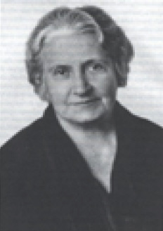
Montessori yöntemi Bkz. MONTESSORİ, Maria.
moral çöküntüsü (demoralization) Sorunları çözmede etkisiz, yetersiz olma ve kendi yaşamını yönetememe duygusu, utanma ve mutsuzluk, moral çöküntülü kişinin tipik özellikleridir. Bu duygular, uzun süreli panik bozukluğunun ve depresyonun da sıklıkla görülen belirtileridir.
moralite Bkz. ahlak.
moral realizm Bkz. ahlaksal gerçekçilik.
moratoryum (moratorium) E. Erikson’a göre, ilk gençlik döneminde kişinin kalıcı bir meslek, toplumsal kimlik seçimi yapmadan önce, değişik kimlikleri (toplumsal rolleri) denediği, kimlik kazanımını uzun süre askıya aldığı evre. Ancak, kimliğin bu biçimde uzun süre askıya alınması, toplumsal-ekonomik statüyle ilişkili olduğu görülüyor. Örneğin, çocuk yaşta çalışmaya başlayan; yirmisine basmadan belli bir meslekte yer alan, evlenip çoluk çocuğa karışan bir kişi için böyle bir askıya alma söz konusu değildir. Bkz. insanın sekiz çağı ((5) Kimlik Karmaşasına Karşı Kimlik Duygusunun Gelişimi).
MORENO, Jacop Levy (1892-1974) Rumen asıllı Amerikan sosyolog. Moreno, Bükreş’te doğdu; New York’ta öldü. Viyana’da psikiyatrist olarak çalıştı. Freud ve Marx’ın etkisinde kaldıysa da Freud’un çocukluk dönemleri üzerine araştırmalarını ve grupların toplumsal-duygusal yapısının gerçekliğini göz önünde tutmayan önselci Marxçı ideolojiyi benimsemeyi reddetti. Tiyatro merakının etkisiyle doğaçlama tiyatroyu (Stegreiftheater’ı-kendiliğindenlik tiyatrosunu) yarattı. Burada her oyuncu, kendi rolünü doğaçlama oynuyordu. 1925’te ABD’ye gitti. Orada sosyometri ve grup dinamiği ile ilgili kuramlarını oluşturdu. 1934’te Who shall Survive? (Kim Hayatta Kalacak?) adlı başyapıtını yayımladı. 1944-1954 arasında Psychodrama Monographs başlığı altında yayımladığı bir dizi makalede düşünce ve deneylerini açıkladı. Bkz. kendiliğindenlik testi; kendiliğindenlik tiyatrosu.
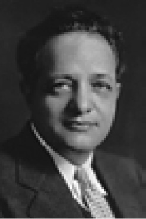
morfin (morphine) Eroin gibi afyondan elde edilen, sentetik üretilen ve kullanan kişide kısa sürede yoğun ruhsal ve bedensel bağımlılık yaratan güçlü bir uyuşturucu. Morfin ve benzeri ağrı kesiciler, başlangıçta genel bir gevşeme ve rahatlık, zihin bulanıklığı, umursamazlık, keyif ve mutluluk yaratırken, doz artırıldığında kan basıncı düşüyor, bulantı ve kusma görülüyor; göz bebekleri çok küçülüyor. Ağır zehirlenmelerde ise, göz bebekleri büyüyor, refleksler ortadan kalkıyor ve kişi komaya girerek ölebiliyor. Morfin bağımlılarında bedensel ve cinsel güçte azalma, beden direncinde de düşme oluyor. Morfin yokluğu, kişide sinirlilik, terleme, çarpıntı, kas kasılmaları, iç sıkıntısı, uykusuzluk, bulantı, kusma, karın ağrısı, ateş yükselmesi gibi belirtilere yol açıyor.
morfoloji Bkz. biçimbilim.
morfolojik eksiklik (morphological inferiority) Adler’in organ eksikliğinin, bir organın ya da parçasının biçiminde, büyüklüğünde ya da gücündeki kusurlarla tanımlanan bir alt grubuna verdiği ad; biçimsel eksiklik.
motif Bkz. güdü.
muhafazakârlık (conservatizm) Var olan yapıya şaşam veren geleneksel değer ve normları korumadan yana olma; konservatizm, statükoculuk. Hızlı değişimle geleneklerden kopmaya karşı çıkma.
muhakeme etme Bkz. akıl yürütme.
muhayyile Bkz. imgelem.
muhtelif Bkz. ayrışık.
mukayeseli ruhiyat Bkz. karşılaştırmalı psikoloji.
muktesebat Bkz. edim; eylem.
multiple skleroz (Multiple Sclerosis (MS)) Beyinde ve omurilikteki ak maddeyi örten miyelin tabakasının aşınması sonucunda genç yetişkinlik ya da orta yaşlılık döneminde ortaya çıkan ve kadınlarda erkeklerden daha sık rastlanan süreğen bir merkezi sinir sistemi hastalığı. Bu bozukluk, miyelini aşınan yere; yani aşınmadan etkilenen sinirlere bağlı olarak MS belirtileri de bilinen bütün sinirsel bozuklukların belirtilerine benzeyebiliyor. Hastalığın belirtileri arasında dengesizlik, dengesiz yürüme, bitkinlik, konuşma bozuklukları, gözlerin hızlı ve istemsiz hareketi, bulanık ya da çift görme, körlük, duygusuzluk, felç, dikkatsizlik, akıl yürütme yeteneğinin yitirilmesi ve benzerleri yer alıyor. Kesin nedeni bilinmeyen bu hastalık, tedavi edilemiyor. Inferon gibi ilaçlarla, daha çok, yinelemelerin sayısı ve ağırlığı azaltılabiliyor.
MURRAY, Henry Alexandre (1893-1988) Geliştirdiği kişilik tanımlama testleri ile tanınan ABD’li psikolog. Murray, New York’ta doğdu. Columbia Üniversitesi’nde tıp öğrenimi yaptı. Harvard Üniversitesi’nde iki yıl fizyoloji dersleri verdi. İki yıl Columbia Presbiteryen Hastanesi’nde cerrahi asistanı olarak çalıştı. İki yıl New York’ta, Rockefeller Tıp Araştırmaları Enstitüsü’nde embriyoloji araştırmaları yaptı. 1927’de İngiltere’de Camridge Üniversitesi’nde biyokimya konusunda doktora yaptı. O yıllarda Jung’un yapıtlarından etkilenerek tüm ilgisini psikolojiye yöneltti. ABD’ye dönüşünde, akademik eğitim görmemiş olmasına karşın, Harvard Üniversitesinde psikoloji dersleri vermeye başladı. 1928’de, kurmuş olduğu Harvard Psikoloji Kliniği yöneticiliğine getirildi. 1943’te orduda görev aldı. 1947’de yine Harvard’a döndü. İki yıl sonra klinik psikolojisi profesörü oldu. 1962’de emekli olduktan sonra çeşitli kitaplar yayımladı. Murray, kişilik kuramı ve kişilik tanısına yaptığı katkılarla psikolojide önemli bir yer edindi. Kişiliğin soruşturulmasında birbirinden farklı yöntemler, özellikle belirli durumlar karşısında kişinin verdiği tepkilerin yorumlanmasını temel alan yansıtıcı testler geliştirdi. Kısa adı TAT olan Tematik Değerlendirme Testi (Konusal Algılama Testi) ile ünlendi. Bu test, Rorschhach yöntemiyle birlikte, uygulamada en çok kullanılan kişilik tanısı yöntemidir. Söz konusu testte, resim üzerine oluşturulacak imgesel öykülerin, bireyin kişiliğini anlatacak çeşitli yorumlara açık resimlerin bulunduğu 30 küçük kart kullanılıyor. Deneklerden, bu kartlardaki resimlerde olup bitenlerle ilgili öyküler uydurmaları isteniyor. Bu öyküler, belirlenmiş olan ölçütlere göre değerlendirilerek deneğin kişilik yapısı ortaya çıkarılıyor. Murray, en çok etki yaratan Kişilik Araştırmaları adlı kitabında gereksinim kavramını inceledi. Her bireyde var olan yirmi temel psikolojik gereksinimi belirledi. Birey davranışlarının dinamiklerini oluşturduğunu ve göreli sıralanma farklılıklarına göre kişiliklerini kurduğunu belirttiği bu temel gereksinimlerin başlıcaları; kendini alçaltma, başarma, önder olma gereksinimleridir. Murray, gereksinimlerin yanı sıra bir de bireyin kişiliğini oluşturan zorlayıcılardan söz etmiştir. Ona göre gereksinim, davranışın güdüsel köklerini ortaya koyan bir düzenleyicidir. Zorlayıcı davranışı belirleyen ya da etkisi altında tutan ise çevredir. Murray’ın, Freud ve Jung’un psikanalitik görüşlerinden etkilendiği; Whitehead’in felsefesinde uygun mantıksal modeli bulduğu bilinir. O, bilimsel yaşamı süresince hep çok sayıda öznenin ya da grupların değil; az sayıda bireysel olayın ayrıntılı olarak incelenmesini temel alan davranış araştırmalarını savunmuştur. Başlıca yapıtları: Explorations in Personality (1938) (Kişilik Araştırmaları), Thematic Apperception Test Manuel (1943) (Tematik Değerlendirme Testi Kılavuzu).
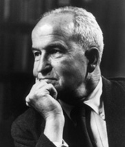
Photo: Harvard University Archives
MUSTAFA NECATİ (1892-1929) Milli Eğitimde köklü atılımların öncüsü olan Türk devlet adamı ve eğitimci. Mustafa Necati, İzmirde doğdu; Ankara’da öldü. İzmir İdadisi’ni ve İstanbul Hukuk Mektebi’ni bitirdi. 1914’te İzmir’de avukat olarak çalışmaya başladı. Kız Muallim Mektebi’nde öğretmenlik; 1915-1918 yılları arasında Şark İdadisi’nde yöneticilik yaptı. Demiryollarında hukuk danışmanlığında bulundu. 15 Mayıs 1919’da İzmir’i Yunanlıların işgal etmesi üzerine Balıkesir’deki milli çetelerle birleşerek Kuva-yı Milliye Komutanlığı yaptı.Vasıf Çınar’la birlikte Balıkesir’de İzmir’e Doğru gazetesini çıkardı. Kutuluş Savaşı’ndan yana yazılar yayımladı. 1920’de Saruhan (Manisa) mebusu olarak Türkiye Büyük Millet Meclisi’ne girdi. Sıvas İstiklal Mahkemesi üyeliği ve TBMM Müdafaa-i Hukuk Grubu kâtipliği yaptı. Kastamonu ve çevresi İstiklal Mahkemesi başkanlığını yürüttü. 1923’te İzmir mebusu seçildi. 20 Ekim 1923’te Mübadele İmar ve İskân Bakanı; 7 Mart 1924’te Adalet Bakanı oldu. 1923-1925 arasında Muallimler Birliği Başkanlığına getirildi. 20 Aralık 1925’te Maarif Bakanlığı’na atandı. 20 Mart 1926’da Maarif-i Umumiye Kanunu’nu çıkarttırdı. Bu yasa ile eğitimde sürekliliği sağlayacak olan Talim ve Terbiye Dairesi’ni ve eğitimin merkezleştirilmesini başlatan Maarif eminliklerini oluşturdu. Tevhid-i Tedrisat Kanunu’nu uygalamaya koydu. Bakanlıkıta halk eğitimi birimi, halk dersaneleri, sanayi-i nefise (Güzel Sanatlar) müdürlüğü gibi yeni birçok örgütlenmelerle eğitim kurumlarının ve kadrolarının belirli bir ölçüde geli,şimini sağladı. 1926-1927 yıllarında Kayseri-Zincirdere’de ve Denizli’de ikji köy öğretmen okulu açtırdı. 26 Mayıs 1927’de teknik ve mesleki okulların Maarif Bakanlığına bağlanmasını sağladı. 1 Ocak 1928’de kabul edilen Latin harflerinin ülke çapında uygulanmasını yönetti. Öğretmenler için Terbiye dergisinin yayımını başlattı. Meskeki kurslar düzenleyerek öğretmen niteliğinin yükseltilmesine çalıştı. Bkz. Türklerde eğitim (Türkiye Cumhuriyeti’nde Eğitim Devrimi ve Sonrası).
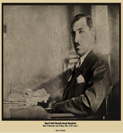
mutasyon Bkz. yapı değişimi.
mutlak duyarlık (absolute sensitivity) Bir duyum yaratmak için gerekli olan en az uyarım miktarı. Bkz. mutlak eşik.
mutlak eşik (absolute threshold) 1. Denemelerin yüzde 50’sinde ölçülebilen en düşük uyarım miktarı. 2. Bir tepki ya da duyumsama yaratmak için gerekli olan en az sinir uyarım miktarı. Uyarımların etkin olarak duyumsama yaratması, değişmez bir düzey düşündürse de mutlak eşik, görelidir; kişiden kişiye; aynı kişide alıcılarda ve çevresel koşullardaki değişmelere bağlı olarak dalgalanma gösteriyor. Bkz. mutlak duyarlık.
mutlak sapma (absolute inversion) Freud’a göre, karşı cinse yönelik ilginin tümüyle devre dışı bırakıldığı; karşı cins düşüncesinin bile tiksinti uyandırabildiği eşcinsellik türü. Bkz. çift cinsellik.
mutluluk (happiness) Beliren bedensel, zihinsel, toplumsal, duygusal ve cinsel gereksinimler doyurucu düzeyde ve dengeli bir biçimde giderildikçe; duyulan istekler, gerçekçi bir çaba gösterilerek karşılandıkça; kendini gerçekleştirme yolunda başarı kazanıldıkça duyumsanan göreli yoğun duygu. Uzun ya da kısa bekleyişlerin ardından, istenen sona ulaşıldığında duyulan kıvanç durumu. Kimi kulağa fısıldanan bir sözün yarattığı duygu, tatlı bir bakışla karşılaşmak, bir ev sahibi olmak, çocuğunun iyi bir eğitim aldığını görmek; kimi de ülkesi için, insanlık için yararlı bir iş yapmak, ürün ortaya koymak; saadet, kut, ongunluk. İnsan, yoğun mutlulukları, duyduğu çok güçlü gereksinimlerini doyuma ulaştırdığı, yoğun beklenti ve özlemlerini gerçekleştirdiği zamanlarda yaşıyor. Bkz. aşk; başarı; evlilik (Evliliği Sürekli Kılmanın Koşulları); gerçeklik ilkesi; haz ilkesi; sevgi.
MUTLULUK
Öztin AKGÜÇ
Mutluluk nedir? Nazım Hikmet, Abidin Dino’ya sormuş “Sen mutluluğun resmini yapabilir misin?” diye; soralım, mutluluğun tanımı yapılabilir mi?
Mutluluk kimine göre yaşamdan haz almak, hazcılık, hedonizmdir. Ağırlıklı olarak içgüdüsel bir yaşam, içgüdüsel doyumun getirdiği haz, mutluluktur. Kimine göre mutluluk, yaşamdaki beklentilerin karşılanması, isteklere ulaşılmasıdır. Beklentiler, para, şöhret, düzgün, mesut bir aile yaşamı, politik güç, sağlıklı ömür gibi farklılıklar gösterebilir. Ancak bu teze göre mutluluk için önemli olan, kişinin istediğini elde etmesidir. İsteğin niteliği, içeriği ise özneldir, kişiden kişiye farklılık gösterir. Bazıları için anlamlı olan para, politik güç, şöhret gibi istekler, kimileri için bir anlam taşımayabilir; istek, beklenti listesinde yer almayabilir.
Amaç listesi kuramına göre ise mutluluk, yalnız duygu, duygusal bir doyum değildir. Mutluluğu salt duygusal doyumdan ayırmak gerekir. İnsanların gerçekten değerli amaç listesi olmalıdır. Bu amaç listesinde iyi bir vatandaş olmak, Tanrı’ya iyi bir kul olmak, kültür düzeyini yükseltmek, topluma, insanlığa yararlı projeler üretmek ve gerçekleştirmek, bilim ve sanat alanında eserler vermek, insanlara yardımcı olmak, bilgeliğe ulaşmak gibi amaçlar yer alabilir.
Mutluluk anlayışı belki de üçe; haz duyma, istediğini elde etme ve amaçları gerçekleştirmeye, amaç listesi oluşturmaya indirgenebilir. Ayrıntı, uyarlama farkı gibi gelse de daha değişik mutluluk anlayışı veya yaşamı da savunulabilir.
Kitilonlu Zenon’un Stoacı felsefe okuluna göre mutluluk, erdemli, doğaya, akla uygun ve her türlü kötülükten uzak olarak yaşamı sürdürmenin sonucu ruh dinginliğine ulaşmaktır. Buna karşı Fuzuli’nin “Aşk imiş her ne var âlemde” dizesinden de esinlenerek yaşamı, mutluluğu daha romantik, duygusal algılayabiliriz. Mutluluğu platonik, cinsel dürtü ve arzulardan kurtulmuş bir aşkı yaşamak olarak da özetleyebiliriz.
Mutluluk anlayışı, algılaması değişik olduğu gibi, mutluluğun değerlendirilmesi de farklıdır. Mutluluk nasıl değerlendirilecektir? Mutluluk anlık bir duygu mu, yoksa geçmişe, yaşananlara bakılarak yapılacak bir değerlendirme midir? “Mutlu muyum?”, “Mutlu oldum mu?” yaklaşımları da bu farklılığı yansıtır.
(...)
Mutluluk, kuşkusuz öznel bir duygu. Ancak insan olarak içgüdüsel bir yaşantımız, hazcı, hedonist olduğu yadsınamaz bir yönümüz, sadece yaşamdan haz, zevk almak, acıdan kaçınmak, arzuların gerçekleşmesini beklemek mutluluk için yeterli mi? Mutluluk anlayışımız kuşkusuz daha kapsamlı, daha nitelikli olmalıdır. İçgüdülerden arınmış duygusal bir yaşam, toplumsal amaçlarımızın olması, doğaya, insanlara zarar vermeden erdemli bir yaşam sürdürmek de mutluluk anlayışımızın ayrılmaz öğeleri olmalıdır. Mutluluk, belki farklı kriterlerin, anlayışların, kuramların bir sentezi de olabilir. Ancak Hüdayi nabit, kendi biten bir ot gibi duygu ve düşünceden ırak, içgüdüsel ağırlıklı bir yaşam, herhalde mutluluk olarak algılanmamalıdır. (Cumhuriyet, 30.12.2007)
mutluluk hormonu Bkz. serotonin.
mutlu olma Bkz. mutluluk.
muzırlık Bkz pornografi.
mücerret Bkz. soyut.
müdafaa Bkz. savunma.
müdahale (intervention) Tanı konulan ya da risk taşıyan tıpsal, gelişimsel ya da ruhsal sorunları gidermeyi (iyileştirmeyi) ya da önlemeyi amaçlayan eylemlerin tümünü dile getiren terim. Müdahale, tedavi ya da eğitim amaçlı olabiliyor.
müeyyide Bkz. yaptırım.
müfredat (curriculum) Bir eğitim kurumunun resmi olarak duyurulan ders ve öbür eğitim etkinlikleri.
mühendislik psikolojisi (engineering psychology) Endüstri psikolojisinin insanla makine iletişimini inceleyen dalı. Makine ve araçların tasarımında insanın bilişsel ve davranışsal özelliklerine uygunluk -sağlamayı hedefleyen araştırma, geliştirme çalışmaları; mühendislik ruhbilimi.
mühendislik ruhbilimi Bkz. mühendislik psikolojisi.
mühürleme (imprinting) Yaşamın ilk evrelerinde gerçekleşen, türe özgü, çok hızlı, bir oranda istikrarlı, programlı bir öğrenme; yaşamın duyarlı döneminde anne babalara ya da onların yerine geçenlere bağlanma biçimindeki içgüdüsel davranış yapılarının tetiklenmesi. Yumurtadan yeni çıkmış olan civcivlerin, hareket eden insan, hayvan ya da başka bir nesnenin arkasından gitme eğilimi, bunu örneklendiriyor. Mühürleme, insanlarda geri dönüşlü; hayvanların çoğunda ise geri dönüşsüzdür.
mükâfat Bkz. ödül.
mülakat Bkz. görüşme.
Müler-Lyer yanılsaması (Müler-Lyer illusion) Boyları birbirine eşit olmasına karşın, uçlarında birbirini kesen çizgilerin yön farkları nedeniyle bu iki çizgiden birinin boyunun kısa görünmesi.
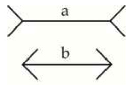
Müller L. Yer Yanılsaması
mümarese Bkz. alıştırma.
mümarese kanunu Bkz. alıştırma yasası.
münakaşa Bkz. tartışma.
münazara (open debate) Bir konu üzerinde, belli kural ve yöntemlere uyularak yapılan sözlü tartışma.
mürekkep lekesi testi (inkblot test) Başlıca aracı genellikle beyaz kâğıt üzerine basılmış (ara sıra renkli) kara mürekkep lekeleri olan bir psikoloji testi. Testi alan kimseye, bu lekelerin her birini dikkatle inceleyip, neye benzediğini söylemesi gerektiği açıklanıyor. Rorsch Testinde olduğu gibi, genellikle tepki türüne göre puanlanıyor. Bkz. RORSCH Herman; Rorsch Testi.
müstehçen (obscene) 1. Açık saçık, edep dışı. 2. Kişilerin cinsel duygularını sömürücü, küçük çocukların ahlak yapılarını bozucu niteliği olan çalışma ve yayınlar; pornografik. Bu tür yayın ve çalışmaların sergilenmesi ve dağıtımı, uluslararası anlaşmalarla önlenmeye çalışılıyor. Bunlar, Türk Ceza Yasası’yla da yasaklanmış ve bunların yayınlanması suç sayılmıştır. Bilim ya da sanat yönünden değer taşıyan çalışmalar, müstehcen sayılmıyor. Ancak, bu çizginin belirlenmesinde birçok kez, anlaşmazlık ortaya çıkıyor. Bkz. pornografi.
müstesna Bkz. ayrık.
müşahade Bkz. gözlem.
müşahade metodu Bkz. gözlem yöntemi.
müşterek psikoloji Bkz. ortak psikoloji.
müşteri (client) Tedavi gören ya da danışmanlık hizmeti alan kişi; danışan. Psikoterapist (ruh sağaltımcı) ve psikiyatristler (ruh hekimleri), genellikle hasta terimini kullanıyorlar. Hümanist yaklaşımcılar ise “hasta” terimini aşağılayıcı, damgalayıcı buluyorlar. Tedavi gören, şu ya da bu konuda yardım arayan insanların, bir tür hizmet satın almaları nedeniyle onlar için müşteri terimini kullanmayı yeğliyorlar. İlk bakışta insancıl görünen bu yaklaşım, gerçekte tedaviyi piyasa koşullarına göre pazarlanan bir mala; hastayı da bu malı satın alabilecek bir müşteri ye dönüştürmekte olduğu gerekçesiyle eleştirilmiştir. Ancak, bunun hastayı rahatlatan; onun kendini normal duyumsamasını sağlayan bir yanı olduğu da unutulmamalıdır. Bu terimin Türkçe karşılığı olarak danışan; “Terapist” karşılığı olarak da danışman gibi oldukça anlamlı birer Türkçe terim önerilmiş ve bu terimler işlerlik kazanmıştır. Bkz. danışan odaklı tedavi.
müzikle tedavi (musical treatment) Müzikal seslerin ve ezgilerin fizyolojik ve ruhsal etkilerinin çeşitli ruhsal bozukluklara belli yöntemlerle uygulanarak gerçekleştirilen tedavi biçimi. Müzikle tedaviden, bedensel ve ruhsal sorunu olan çocuk ve yetişkinlerin ruhsal bozukluk durumlarını gidermede tıpsal tedavinin yanı sıra yardımcı bir öğe olarak yararlanılıyor. Toplumsal ilişkiler geliştirmde, özgüven kazandırmada, bedensel sorunları giderici alıştırmalar yapmada da etken oluyor. Müzikle tedavinin geçmişi, Afrika, Amerika, Asya ve Avrupa’da tarihin derinliklerine uzanıyor. İlkel insanlar, hastalıklarla kötü ruhların neden olduğuna inanıyor ve bu varlıkları büyücülerin, hekimlerin, Şamanların yardımıyla düzenledikleri tedavi törenlerinden yararlanarak denetim altına alıyorlardı. Bu törenlerin vazgeçilmez ögeleri müzik, dans ve ritimdi. Bu gelenek, kimi ilkel kabilelerde bugün de yaşatılıyor. Araştırmalar, müziğin insan ruhu üzerinde yatıştırıcı bir etkisinin bulunduğunu ortaya koymuştur. Müzik eşliğindeki dansla tedavinin hemen bütün Türk toplumlarında da uygulandığı biliniyor. Uygur Türklerinin müzik örnekleri, günümüzden 6000-8000 yıl öncesine dayanıyor. Orta Asya döneminde kopuz ya da saz, iyi ruhları çağırıp kötü ruhları kovmada önemli bir çalgı olarak kullanılmıştır. Altay Türklerinde de Davul, Şamanlarca hasta tedavisinde ve dinsel törenlerde kullanılan önemli bir araçtı. Şaman, kendine özgü tekniği ile ruhu bedenden ayırarak göklere yükselttiğini kişilere duyumsatıyor; böylece, insanı bu kendinden geçirme (trans) ustalığını sergilemiş oluyordu. Davul çalarak ruhları buyruğu altına alıyor; ölülerle, şeytanlarla, cinlerle, perilerle iletişim kurarak hastaları iyileştiriyordu. Türklerde önemli ilk müzikle tedavi çalışmaları, Selçuklu ve Osmanlılarda şifahanelerde uymaya başladı. Şam’daki Nureddin Hastanesi, İstanbul’daki Fatih Darüşşifası, Edirne’deki Edirne Darüşşifası, bunların en önemlileridir. Buralarda tıpsal tedavinin yanı sıra, özellikle ruh hastalarının müzikle tedavisi de başlatıldı. Bugüne dek yapılan birçok araştırma, duygu ve düşünceleri belli bir düzen ve estetik anlayış içinde dile getiren müziğin, çocuk ve yetişkin insan üzerinde olumlu bir etkisinin olduğunu ortaya koymuştur. Müzik, bu özelliği ile çeşitli hastalıkların tedavi sürecini de olumlu etkiliyor. Müzikle tedavi, en çok kullanılan bir sanatsal tedavi yöntemi oldu. Bugün bu tedavi, toplumsal ilişkilerin geliştirilmesini, kendine güveni, bedensel alıştırmaların etkililiğini, devinimlerim denetimine yoğunlaşmayı sağlamada, psikiyatri alanında tedavi programlarının bir öğesi durumuna gelmiştir. Bireylerin sağlıklı bir yaşam sürdürmeleri, uyumlu yaşamaları için müzikten çokça yararlanılmaya başlanmıştır. Konser dinleme, konser icra etme, müzik yaratma çalışmaları yapma ve müzikle dans etme, bu tedavi yönteminin başlıcalarıdır. İlki edilgin; öbürleri ise etkin tedavi biçimleridir. Dördüncüsü, müziğin ritmini bedenin devinimleriyle uyumlu ve dengeli biçimde bütünleştirerek gerçekleştirilen bir dışavurumdur. Müzik, koruyucu olarak da etkili oluyor. Kişiye ve bozukluğa uygun müziklerle örneğin stres giderilebiliyor; kaygı hafifletilebiliyor.
müzik psikolojisi (psychology of muzic) Müzik ve san atla ilgili işitme yaşantılarını inceleyen bir psikoloji dalı; müzik ruhbilimi. Bu dal, müzik seslerini değil de müzik yaşantıları, müzik bilinci ve bunların yorumu, müzik yapıtı yaratma ve müzik yetenekleri gibi konuları araştırıyor.
müzik ruhbilimi Bkz. müzik psikolojisi.
müzik yetersizliği (amusia) Beynin sol yarımküresindeki yıkım sonucu ezgileri algılama yetisinin yitirilmesi biçiminde ortaya çıkan bir tür işitsel körlük; amuziya. Bu terim, müzikle anlatım yetisinin yitirilmesi için de kullanılıyor.